Beyond the Current Observation: Evaluating Multimodal Large Language Models in Controllable Non-Markov Games
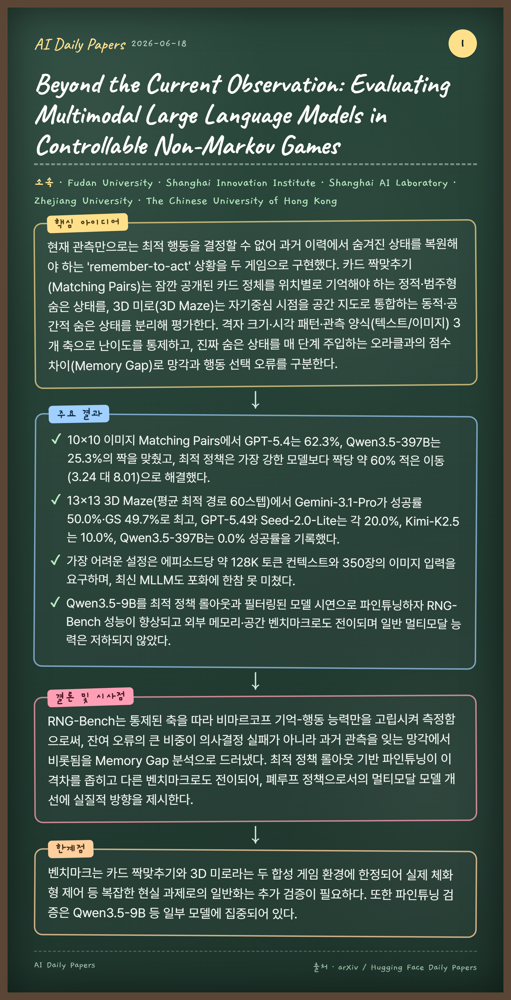
🏛 Fudan University, Shanghai Innovation Institute, Shanghai AI Laboratory, Zhejiang University, The Chinese University of Hong Kong
핵심 아이디어
현재 관측만으로는 최적 행동을 결정할 수 없어 과거 이력에서 숨겨진 상태를 복원해야 하는 'remember-to-act' 상황을 두 게임으로 구현했다. 카드 짝맞추기(Matching Pairs)는 잠깐 공개된 카드 정체를 위치별로 기억해야 하는 정적·범주형 숨은 상태를, 3D 미로(3D Maze)는 자기중심 시점을 공간 지도로 통합하는 동적·공간적 숨은 상태를 분리해 평가한다. 격자 크기·시각 패턴·관측 양식(텍스트/이미지) 3개 축으로 난이도를 통제하고, 진짜 숨은 상태를 매 단계 주입하는 오라클과의 점수 차이(Memory Gap)로 망각과 행동 선택 오류를 구분한다.
주요 결과
10x10 이미지 Matching Pairs에서 GPT-5.4는 62.3%, Qwen3.5-397B는 25.3%의 짝을 맞췄고, 최적 정책은 가장 강한 모델보다 짝당 약 60% 적은 이동(3.24 대 8.01)으로 해결했다.
13x13 3D Maze(평균 최적 경로 60스텝)에서 Gemini-3.1-Pro가 성공률 50.0%·GS 49.7%로 최고, GPT-5.4와 Seed-2.0-Lite는 각 20.0%, Kimi-K2.5는 10.0%, Qwen3.5-397B는 0.0% 성공률을 기록했다.
가장 어려운 설정은 에피소드당 약 128K 토큰 컨텍스트와 350장의 이미지 입력을 요구하며, 최신 MLLM도 포화에 한참 못 미쳤다.
Qwen3.5-9B를 최적 정책 롤아웃과 필터링된 모델 시연으로 파인튜닝하자 RNG-Bench 성능이 향상되고 외부 메모리·공간 벤치마크로도 전이되며 일반 멀티모달 능력은 저하되지 않았다.
결론 및 시사점
RNG-Bench는 통제된 축을 따라 비마르코프 기억-행동 능력만을 고립시켜 측정함으로써, 잔여 오류의 큰 비중이 의사결정 실패가 아니라 과거 관측을 잊는 망각에서 비롯됨을 Memory Gap 분석으로 드러냈다. 최적 정책 롤아웃 기반 파인튜닝이 이 격차를 좁히고 다른 벤치마크로도 전이되어, 폐루프 정책으로서의 멀티모달 모델 개선에 실질적 방향을 제시한다.
한계점
벤치마크는 카드 짝맞추기와 3D 미로라는 두 합성 게임 환경에 한정되어 실제 체화형 제어 등 복잡한 현실 과제로의 일반화는 추가 검증이 필요하다. 또한 파인튜닝 검증은 Qwen3.5-9B 등 일부 모델에 집중되어 있다.
MolmoMotion: Forecasting Point Trajectories in 3D with Language Instruction
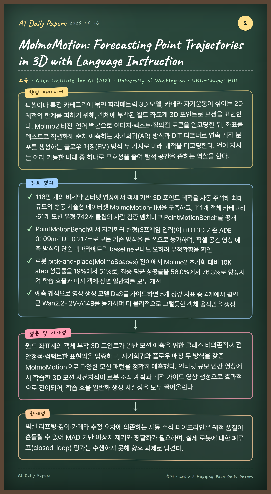
🏛 Allen Institute for AI (Ai2), University of Washington, UNC-Chapel Hill
핵심 아이디어
픽셀이나 특정 카테고리에 묶인 파라메트릭 3D 모델, 카메라 자기운동이 섞이는 2D 궤적의 한계를 피하기 위해, 객체에 부착된 월드 좌표계 3D 포인트로 모션을 표현한다. Molmo2 비전-언어 백본으로 이미지·텍스트·질의점 토큰을 인코딩한 뒤, 좌표를 텍스트로 직렬화해 순차 예측하는 자기회귀(AR) 방식과 DiT 디코더로 연속 궤적 분포를 생성하는 플로우 매칭(FM) 방식 두 가지로 미래 궤적을 디코딩한다. 언어 지시는 여러 가능한 미래 중 하나로 모호성을 줄여 탐색 공간을 좁히는 역할을 한다.
주요 결과
116만 개의 비제약 인터넷 영상에서 객체 기반 3D 포인트 궤적을 자동 주석해 최대 규모의 행동 서술형 데이터셋 MolmoMotion-1M을 구축하고, 111개 객체 카테고리·61개 모션 유형·742개 클립의 사람 검증 벤치마크 PointMotionBench를 공개
PointMotionBench에서 자기회귀 변형(3프레임 입력)이 HOT3D 기준 ADE 0.109m·FDE 0.217m로 모든 기존 방식을 큰 폭으로 능가하며, 픽셀 공간 영상 예측 방식이 단순 비파라메트릭 baseline보다도 오히려 부정확함을 확인
로봇 pick-and-place(MolmoSpaces) 전이에서 Molmo2 초기화 대비 10K step 성공률을 19%에서 51%로, 최종 평균 성공률을 56.0%에서 76.3%로 향상시켜 학습 효율과 미지 객체·장면 일반화를 모두 개선
예측 궤적으로 영상 생성 모델 DaS를 가이드하면 5개 정량 지표 중 4개에서 훨씬 큰 Wan2.2-I2V-A14B를 능가하며 더 물리적으로 그럴듯한 객체 움직임을 생성
결론 및 시사점
월드 좌표계의 객체 부착 3D 포인트가 일반 모션 예측을 위한 클래스 비의존적·시점 안정적·컴팩트한 표현임을 입증하고, 자기회귀와 플로우 매칭 두 방식을 갖춘 MolmoMotion으로 다양한 모션 패턴을 정확히 예측했다. 인터넷 규모 인간 영상에서 학습한 3D 모션 사전지식이 로봇 조작 계획과 궤적 가이드 영상 생성으로 효과적으로 전이되어, 학습 효율·일반화·생성 사실성을 모두 끌어올린다.
한계점
픽셀 리프팅·깊이·카메라 추정 오차에 의존하는 자동 주석 파이프라인은 궤적 품질이 흔들릴 수 있어 MAD 기반 이상치 제거와 평활화가 필요하며, 실제 로봇에 대한 폐루프(closed-loop) 평가는 수행하지 못해 향후 과제로 남겼다.
Kairos: A Native World Model Stack for Physical AI
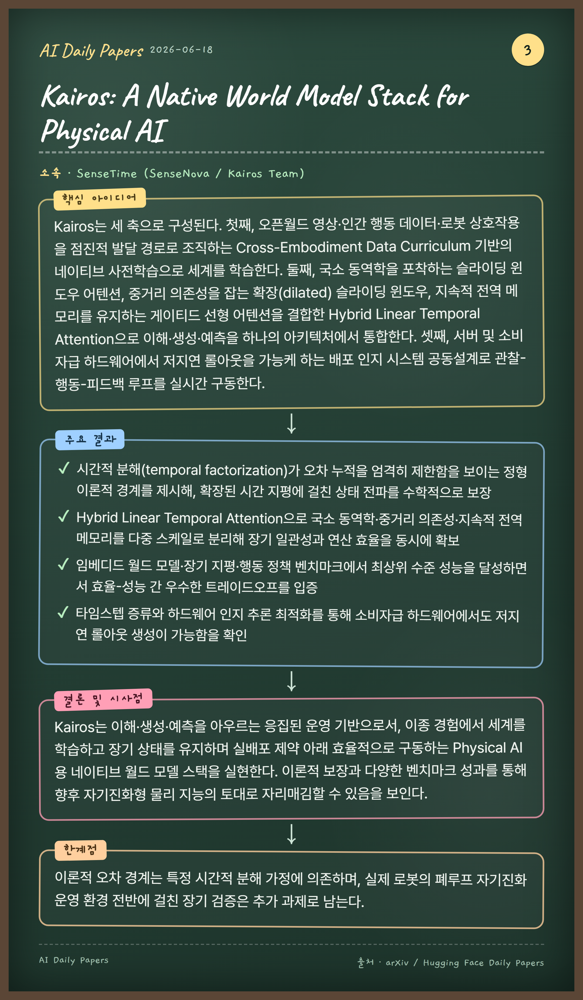
🏛 SenseTime (SenseNova / Kairos Team)
핵심 아이디어
Kairos는 세 축으로 구성된다. 첫째, 오픈월드 영상·인간 행동 데이터·로봇 상호작용을 점진적 발달 경로로 조직하는 Cross-Embodiment Data Curriculum 기반의 네이티브 사전학습으로 세계를 학습한다. 둘째, 국소 동역학을 포착하는 슬라이딩 윈도우 어텐션, 중거리 의존성을 잡는 확장(dilated) 슬라이딩 윈도우, 지속적 전역 메모리를 유지하는 게이티드 선형 어텐션을 결합한 Hybrid Linear Temporal Attention으로 이해·생성·예측을 하나의 아키텍처에서 통합한다. 셋째, 서버 및 소비자급 하드웨어에서 저지연 롤아웃을 가능케 하는 배포 인지 시스템 공동설계로 관찰-행동-피드백 루프를 실시간 구동한다.
주요 결과
시간적 분해(temporal factorization)가 오차 누적을 엄격히 제한함을 보이는 정형 이론적 경계를 제시해, 확장된 시간 지평에 걸친 상태 전파를 수학적으로 보장
Hybrid Linear Temporal Attention으로 국소 동역학·중거리 의존성·지속적 전역 메모리를 다중 스케일로 분리해 장기 일관성과 연산 효율을 동시에 확보
임베디드 월드 모델·장기 지평·행동 정책 벤치마크에서 최상위 수준 성능을 달성하면서 효율-성능 간 우수한 트레이드오프를 입증
타임스텝 증류와 하드웨어 인지 추론 최적화를 통해 소비자급 하드웨어에서도 저지연 롤아웃 생성이 가능함을 확인
결론 및 시사점
Kairos는 이해·생성·예측을 아우르는 응집된 운영 기반으로서, 이종 경험에서 세계를 학습하고 장기 상태를 유지하며 실배포 제약 아래 효율적으로 구동하는 Physical AI용 네이티브 월드 모델 스택을 실현한다. 이론적 보장과 다양한 벤치마크 성과를 통해 향후 자기진화형 물리 지능의 토대로 자리매김할 수 있음을 보인다.
한계점
이론적 오차 경계는 특정 시간적 분해 가정에 의존하며, 실제 로봇의 폐루프 자기진화 운영 환경 전반에 걸친 장기 검증은 추가 과제로 남는다.
Guava: An Effective and Universal Harness for Embodied Manipulation
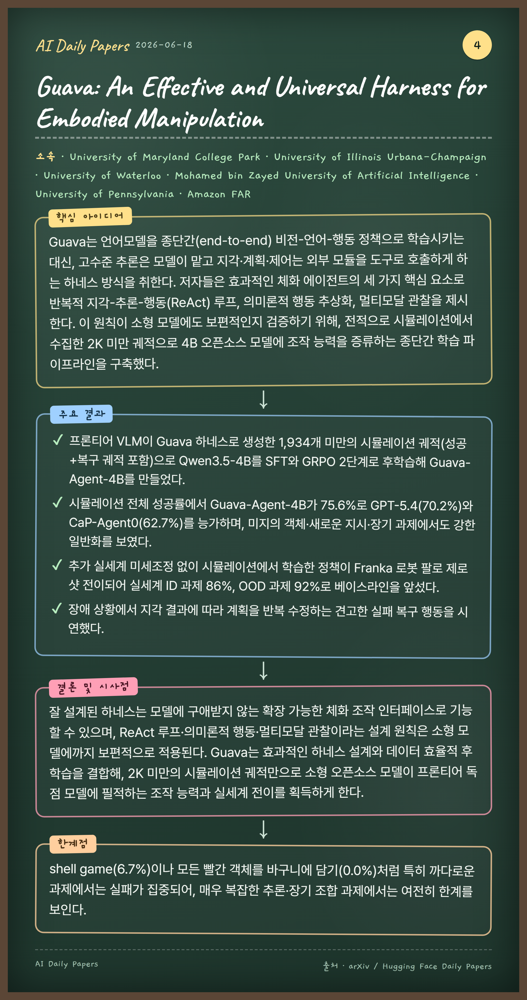
🏛 University of Maryland College Park, University of Illinois Urbana-Champaign, University of Waterloo, Mohamed bin Zayed University of Artificial Intelligence, University of Pennsylvania, Amazon FAR
핵심 아이디어
Guava는 언어모델을 종단간(end-to-end) 비전-언어-행동 정책으로 학습시키는 대신, 고수준 추론은 모델이 맡고 지각·계획·제어는 외부 모듈을 도구로 호출하게 하는 하네스 방식을 취한다. 저자들은 효과적인 체화 에이전트의 세 가지 핵심 요소로 반복적 지각-추론-행동(ReAct) 루프, 의미론적 행동 추상화, 멀티모달 관찰을 제시한다. 이 원칙이 소형 모델에도 보편적인지 검증하기 위해, 전적으로 시뮬레이션에서 수집한 2K 미만 궤적으로 4B 오픈소스 모델에 조작 능력을 증류하는 종단간 학습 파이프라인을 구축했다.
주요 결과
프론티어 VLM이 Guava 하네스로 생성한 1,934개 미만의 시뮬레이션 궤적(성공+복구 궤적 포함)으로 Qwen3.5-4B를 SFT와 GRPO 2단계로 후학습해 Guava-Agent-4B를 만들었다.
시뮬레이션 전체 성공률에서 Guava-Agent-4B가 75.6%로 GPT-5.4(70.2%)와 CaP-Agent0(62.7%)를 능가하며, 미지의 객체·새로운 지시·장기 과제에서도 강한 일반화를 보였다.
추가 실세계 미세조정 없이 시뮬레이션에서 학습한 정책이 Franka 로봇 팔로 제로샷 전이되어 실세계 ID 과제 86%, OOD 과제 92%로 베이스라인을 앞섰다.
장애 상황에서 지각 결과에 따라 계획을 반복 수정하는 견고한 실패 복구 행동을 시연했다.
결론 및 시사점
잘 설계된 하네스는 모델에 구애받지 않는 확장 가능한 체화 조작 인터페이스로 기능할 수 있으며, ReAct 루프·의미론적 행동·멀티모달 관찰이라는 설계 원칙은 소형 모델에까지 보편적으로 적용된다. Guava는 효과적인 하네스 설계와 데이터 효율적 후학습을 결합해, 2K 미만의 시뮬레이션 궤적만으로 소형 오픈소스 모델이 프론티어 독점 모델에 필적하는 조작 능력과 실세계 전이를 획득하게 한다.
한계점
shell game(6.7%)이나 모든 빨간 객체를 바구니에 담기(0.0%)처럼 특히 까다로운 과제에서는 실패가 집중되어, 매우 복잡한 추론·장기 조합 과제에서는 여전히 한계를 보인다.
The Reward Was in Your Data All Along: Correcting Flow Matching with Discriminator-Guided RL
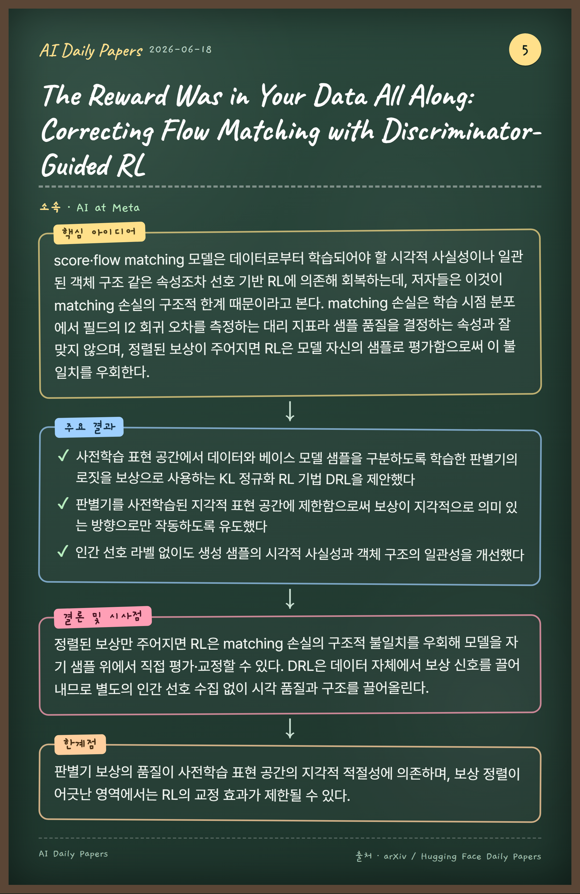
🏛 AI at Meta
핵심 아이디어
score·flow matching 모델은 데이터로부터 학습되어야 할 시각적 사실성이나 일관된 객체 구조 같은 속성조차 선호 기반 RL에 의존해 회복하는데, 저자들은 이것이 matching 손실의 구조적 한계 때문이라고 본다. matching 손실은 학습 시점 분포에서 필드의 l2 회귀 오차를 측정하는 대리 지표라 샘플 품질을 결정하는 속성과 잘 맞지 않으며, 정렬된 보상이 주어지면 RL은 모델 자신의 샘플로 평가함으로써 이 불일치를 우회한다.
주요 결과
사전학습 표현 공간에서 데이터와 베이스 모델 샘플을 구분하도록 학습한 판별기의 로짓을 보상으로 사용하는 KL 정규화 RL 기법 DRL을 제안했다
판별기를 사전학습된 지각적 표현 공간에 제한함으로써 보상이 지각적으로 의미 있는 방향으로만 작동하도록 유도했다
인간 선호 라벨 없이도 생성 샘플의 시각적 사실성과 객체 구조의 일관성을 개선했다
결론 및 시사점
정렬된 보상만 주어지면 RL은 matching 손실의 구조적 불일치를 우회해 모델을 자기 샘플 위에서 직접 평가·교정할 수 있다. DRL은 데이터 자체에서 보상 신호를 끌어내므로 별도의 인간 선호 수집 없이 시각 품질과 구조를 끌어올린다.
한계점
판별기 보상의 품질이 사전학습 표현 공간의 지각적 적절성에 의존하며, 보상 정렬이 어긋난 영역에서는 RL의 교정 효과가 제한될 수 있다.
EfficientRollout: System-Aware Self-Speculative Decoding for RL Rollouts
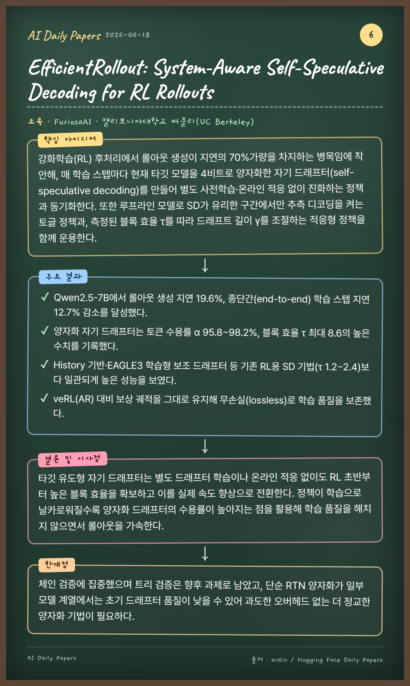
🏛 FuriosaAI, 캘리포니아대학교 버클리(UC Berkeley)
핵심 아이디어
강화학습(RL) 후처리에서 롤아웃 생성이 지연의 70%가량을 차지하는 병목임에 착안해, 매 학습 스텝마다 현재 타깃 모델을 4비트로 양자화한 자기 드래프터(self-speculative decoding)를 만들어 별도 사전학습·온라인 적응 없이 진화하는 정책과 동기화한다. 또한 루프라인 모델로 SD가 유리한 구간에서만 추측 디코딩을 켜는 토글 정책과, 측정된 블록 효율 τ를 따라 드래프트 길이 γ를 조절하는 적응형 정책을 함께 운용한다.
주요 결과
Qwen2.5-7B에서 롤아웃 생성 지연 19.6%, 종단간(end-to-end) 학습 스텝 지연 12.7% 감소를 달성했다.
양자화 자기 드래프터는 토큰 수용률 α 95.8~98.2%, 블록 효율 τ 최대 8.6의 높은 수치를 기록했다.
History 기반·EAGLE3 학습형 보조 드래프터 등 기존 RL용 SD 기법(τ 1.2~2.4)보다 일관되게 높은 성능을 보였다.
veRL(AR) 대비 보상 궤적을 그대로 유지해 무손실(lossless)로 학습 품질을 보존했다.
결론 및 시사점
타깃 유도형 자기 드래프터는 별도 드래프터 학습이나 온라인 적응 없이도 RL 초반부터 높은 블록 효율을 확보하고 이를 실제 속도 향상으로 전환한다. 정책이 학습으로 날카로워질수록 양자화 드래프터의 수용률이 높아지는 점을 활용해 학습 품질을 해치지 않으면서 롤아웃을 가속한다.
한계점
체인 검증에 집중했으며 트리 검증은 향후 과제로 남았고, 단순 RTN 양자화가 일부 모델 계열에서는 초기 드래프터 품질이 낮을 수 있어 과도한 오버헤드 없는 더 정교한 양자화 기법이 필요하다.
SAE Interventions are Unreliable: Post-Intervention Recovery of Suppressed Behavior
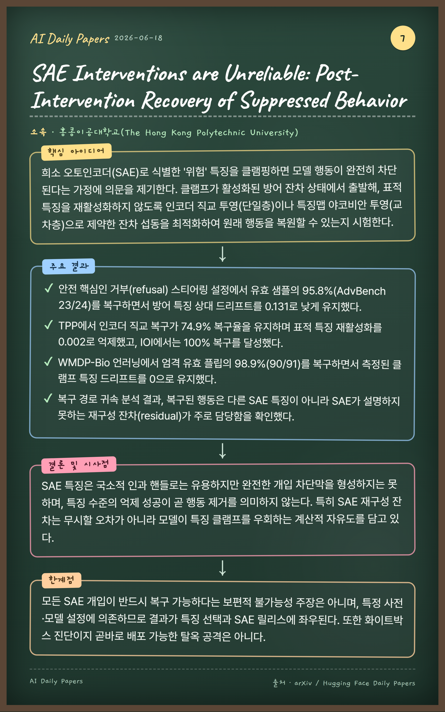
🏛 홍콩이공대학교(The Hong Kong Polytechnic University)
핵심 아이디어
희소 오토인코더(SAE)로 식별한 '위험' 특징을 클램핑하면 모델 행동이 완전히 차단된다는 가정에 의문을 제기한다. 클램프가 활성화된 방어 잔차 상태에서 출발해, 표적 특징을 재활성화하지 않도록 인코더 직교 투영(단일층)이나 특징맵 야코비안 투영(교차층)으로 제약한 잔차 섭동을 최적화하여 원래 행동을 복원할 수 있는지 시험한다.
주요 결과
안전 핵심인 거부(refusal) 스티어링 설정에서 유효 샘플의 95.8%(AdvBench 23/24)를 복구하면서 방어 특징 상대 드리프트를 0.131로 낮게 유지했다.
TPP에서 인코더 직교 복구가 74.9% 복구율을 유지하며 표적 특징 재활성화를 0.002로 억제했고, IOI에서는 100% 복구를 달성했다.
WMDP-Bio 언러닝에서 엄격 유효 플립의 98.9%(90/91)를 복구하면서 측정된 클램프 특징 드리프트를 0으로 유지했다.
복구 경로 귀속 분석 결과, 복구된 행동은 다른 SAE 특징이 아니라 SAE가 설명하지 못하는 재구성 잔차(residual)가 주로 담당함을 확인했다.
결론 및 시사점
SAE 특징은 국소적 인과 핸들로는 유용하지만 완전한 개입 차단막을 형성하지는 못하며, 특징 수준의 억제 성공이 곧 행동 제거를 의미하지 않는다. 특히 SAE 재구성 잔차는 무시할 오차가 아니라 모델이 특징 클램프를 우회하는 계산적 자유도를 담고 있다.
한계점
모든 SAE 개입이 반드시 복구 가능하다는 보편적 불가능성 주장은 아니며, 특정 사전·모델 설정에 의존하므로 결과가 특징 선택과 SAE 릴리스에 좌우된다. 또한 화이트박스 진단이지 곧바로 배포 가능한 탈옥 공격은 아니다.
Reinforcing Dual-Path Reasoning in Spatial Vision Language Models
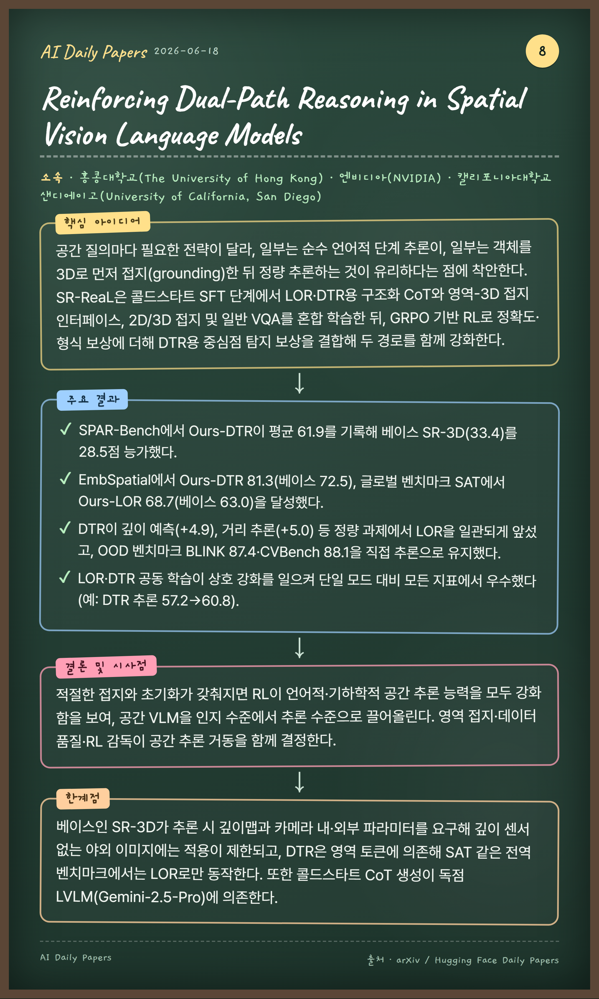
🏛 홍콩대학교(The University of Hong Kong), 엔비디아(NVIDIA), 캘리포니아대학교 샌디에이고(University of California, San Diego)
핵심 아이디어
공간 질의마다 필요한 전략이 달라, 일부는 순수 언어적 단계 추론이, 일부는 객체를 3D로 먼저 접지(grounding)한 뒤 정량 추론하는 것이 유리하다는 점에 착안한다. SR-ReaL은 콜드스타트 SFT 단계에서 LOR·DTR용 구조화 CoT와 영역-3D 접지 인터페이스, 2D/3D 접지 및 일반 VQA를 혼합 학습한 뒤, GRPO 기반 RL로 정확도·형식 보상에 더해 DTR용 중심점 탐지 보상을 결합해 두 경로를 함께 강화한다.
주요 결과
SPAR-Bench에서 Ours-DTR이 평균 61.9를 기록해 베이스 SR-3D(33.4)를 28.5점 능가했다.
EmbSpatial에서 Ours-DTR 81.3(베이스 72.5), 글로벌 벤치마크 SAT에서 Ours-LOR 68.7(베이스 63.0)을 달성했다.
DTR이 깊이 예측(+4.9), 거리 추론(+5.0) 등 정량 과제에서 LOR을 일관되게 앞섰고, OOD 벤치마크 BLINK 87.4·CVBench 88.1을 직접 추론으로 유지했다.
LOR·DTR 공동 학습이 상호 강화를 일으켜 단일 모드 대비 모든 지표에서 우수했다(예: DTR 추론 57.2→60.8).
결론 및 시사점
적절한 접지와 초기화가 갖춰지면 RL이 언어적·기하학적 공간 추론 능력을 모두 강화함을 보여, 공간 VLM을 인지 수준에서 추론 수준으로 끌어올린다. 영역 접지·데이터 품질·RL 감독이 공간 추론 거동을 함께 결정한다.
한계점
베이스인 SR-3D가 추론 시 깊이맵과 카메라 내·외부 파라미터를 요구해 깊이 센서 없는 야외 이미지에는 적용이 제한되고, DTR은 영역 토큰에 의존해 SAT 같은 전역 벤치마크에서는 LOR로만 동작한다. 또한 콜드스타트 CoT 생성이 독점 LVLM(Gemini-2.5-Pro)에 의존한다.
Trust the Right Teacher: Quality-Aware Self-Distillation for GUI Grounding
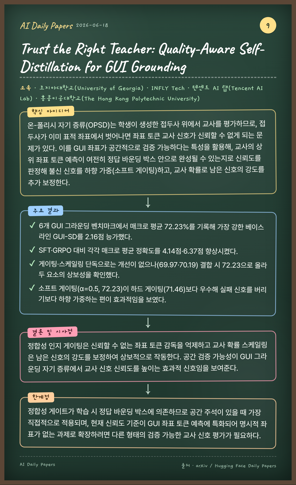
🏛 조지아대학교(University of Georgia), INFLY Tech, 텐센트 AI 랩(Tencent AI Lab), 홍콩이공대학교(The Hong Kong Polytechnic University)
핵심 아이디어
온-폴리시 자기 증류(OPSD)는 학생이 생성한 접두사 위에서 교사를 평가하므로, 접두사가 이미 표적 좌표에서 벗어나면 좌표 토큰 교사 신호가 신뢰할 수 없게 되는 문제가 있다. 이를 GUI 좌표가 공간적으로 검증 가능하다는 특성을 활용해, 교사의 상위 좌표 토큰 예측이 여전히 정답 바운딩 박스 안으로 완성될 수 있는지로 신뢰도를 판정해 불신 신호를 하향 가중(소프트 게이팅)하고, 교사 확률로 남은 신호의 강도를 추가 보정한다.
주요 결과
6개 GUI 그라운딩 벤치마크에서 매크로 평균 72.23%를 기록해 가장 강한 베이스라인 GUI-SD를 2.16점 능가했다.
SFT·GRPO 대비 각각 매크로 평균 정확도를 4.14점·6.37점 향상시켰다.
게이팅·스케일링 단독으로는 개선이 없으나(69.97·70.19) 결합 시 72.23으로 올라 두 요소의 상보성을 확인했다.
소프트 게이팅(α=0.5, 72.23)이 하드 게이팅(71.46)보다 우수해 실패 신호를 버리기보다 하향 가중하는 편이 효과적임을 보였다.
결론 및 시사점
정합성 인지 게이팅은 신뢰할 수 없는 좌표 토큰 감독을 억제하고 교사 확률 스케일링은 남은 신호의 강도를 보정하여 상보적으로 작동한다. 공간 검증 가능성이 GUI 그라운딩 자기 증류에서 교사 신호 신뢰도를 높이는 효과적 신호임을 보여준다.
한계점
정합성 게이트가 학습 시 정답 바운딩 박스에 의존하므로 공간 주석이 있을 때 가장 직접적으로 적용되며, 현재 신뢰도 기준이 GUI 좌표 토큰 예측에 특화되어 명시적 좌표가 없는 과제로 확장하려면 다른 형태의 검증 가능한 교사 신호 평가가 필요하다.
From Trainee to Trainer: LLM-Designed Training Environment for RL with Multi-Agent Reasoning
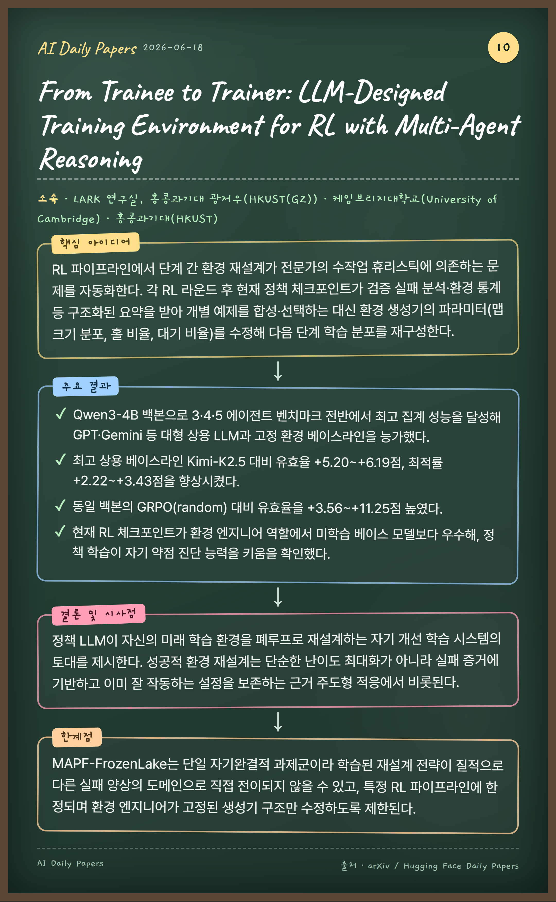
🏛 LARK 연구실, 홍콩과기대 광저우(HKUST(GZ)), 케임브리지대학교(University of Cambridge), 홍콩과기대(HKUST)
핵심 아이디어
RL 파이프라인에서 단계 간 환경 재설계가 전문가의 수작업 휴리스틱에 의존하는 문제를 자동화한다. 각 RL 라운드 후 현재 정책 체크포인트가 검증 실패 분석·환경 통계 등 구조화된 요약을 받아 개별 예제를 합성·선택하는 대신 환경 생성기의 파라미터(맵 크기 분포, 홀 비율, 대기 비율)를 수정해 다음 단계 학습 분포를 재구성한다.
주요 결과
Qwen3-4B 백본으로 3·4·5 에이전트 벤치마크 전반에서 최고 집계 성능을 달성해 GPT·Gemini 등 대형 상용 LLM과 고정 환경 베이스라인을 능가했다.
최고 상용 베이스라인 Kimi-K2.5 대비 유효율 +5.20~+6.19점, 최적률 +2.22~+3.43점을 향상시켰다.
동일 백본의 GRPO(random) 대비 유효율을 +3.56~+11.25점 높였다.
현재 RL 체크포인트가 환경 엔지니어 역할에서 미학습 베이스 모델보다 우수해, 정책 학습이 자기 약점 진단 능력을 키움을 확인했다.
결론 및 시사점
정책 LLM이 자신의 미래 학습 환경을 폐루프로 재설계하는 자기 개선 학습 시스템의 토대를 제시한다. 성공적 환경 재설계는 단순한 난이도 최대화가 아니라 실패 증거에 기반하고 이미 잘 작동하는 설정을 보존하는 근거 주도형 적응에서 비롯된다.
한계점
MAPF-FrozenLake는 단일 자기완결적 과제군이라 학습된 재설계 전략이 질적으로 다른 실패 양상의 도메인으로 직접 전이되지 않을 수 있고, 특정 RL 파이프라인에 한정되며 환경 엔지니어가 고정된 생성기 구조만 수정하도록 제한된다.
Native Active Perception as Reasoning for Omni-Modal Understanding
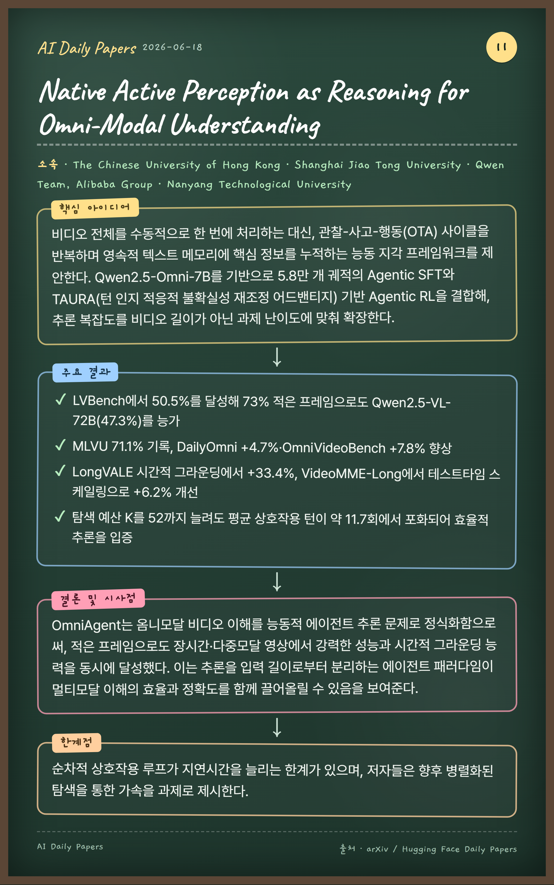
🏛 The Chinese University of Hong Kong, Shanghai Jiao Tong University, Qwen Team, Alibaba Group, Nanyang Technological University
핵심 아이디어
비디오 전체를 수동적으로 한 번에 처리하는 대신, 관찰-사고-행동(OTA) 사이클을 반복하며 영속적 텍스트 메모리에 핵심 정보를 누적하는 능동 지각 프레임워크를 제안한다. Qwen2.5-Omni-7B를 기반으로 5.8만 개 궤적의 Agentic SFT와 TAURA(턴 인지 적응적 불확실성 재조정 어드밴티지) 기반 Agentic RL을 결합해, 추론 복잡도를 비디오 길이가 아닌 과제 난이도에 맞춰 확장한다.
주요 결과
LVBench에서 50.5%를 달성해 73% 적은 프레임으로도 Qwen2.5-VL-72B(47.3%)를 능가
MLVU 71.1% 기록, DailyOmni +4.7%·OmniVideoBench +7.8% 향상
LongVALE 시간적 그라운딩에서 +33.4%, VideoMME-Long에서 테스트타임 스케일링으로 +6.2% 개선
탐색 예산 K를 52까지 늘려도 평균 상호작용 턴이 약 11.7회에서 포화되어 효율적 추론을 입증
결론 및 시사점
OmniAgent는 옴니모달 비디오 이해를 능동적 에이전트 추론 문제로 정식화함으로써, 적은 프레임으로도 장시간·다중모달 영상에서 강력한 성능과 시간적 그라운딩 능력을 동시에 달성했다. 이는 추론을 입력 길이로부터 분리하는 에이전트 패러다임이 멀티모달 이해의 효율과 정확도를 함께 끌어올릴 수 있음을 보여준다.
한계점
순차적 상호작용 루프가 지연시간을 늘리는 한계가 있으며, 저자들은 향후 병렬화된 탐색을 통한 가속을 과제로 제시한다.
Sumi: Open Uniform Diffusion Language Model from Scratch
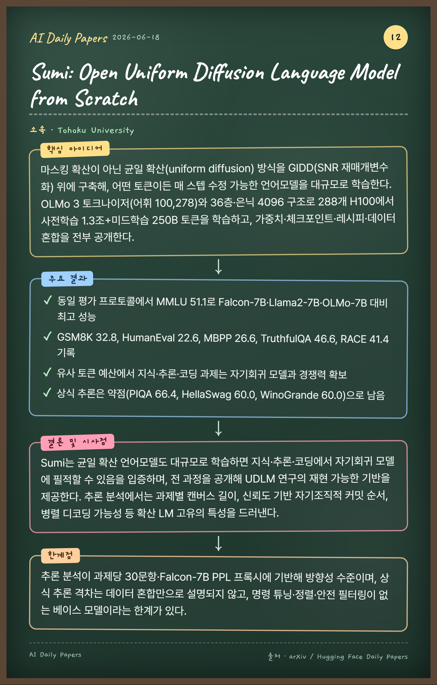
🏛 Tohoku University
핵심 아이디어
마스킹 확산이 아닌 균일 확산(uniform diffusion) 방식을 GIDD(SNR 재매개변수화) 위에 구축해, 어떤 토큰이든 매 스텝 수정 가능한 언어모델을 대규모로 학습한다. OLMo 3 토크나이저(어휘 100,278)와 36층·은닉 4096 구조로 288개 H100에서 사전학습 1.3조+미드학습 250B 토큰을 학습하고, 가중치·체크포인트·레시피·데이터 혼합을 전부 공개한다.
주요 결과
동일 평가 프로토콜에서 MMLU 51.1로 Falcon-7B·Llama2-7B·OLMo-7B 대비 최고 성능
Sumi는 균일 확산 언어모델도 대규모로 학습하면 지식·추론·코딩에서 자기회귀 모델에 필적할 수 있음을 입증하며, 전 과정을 공개해 UDLM 연구의 재현 가능한 기반을 제공한다. 추론 분석에서는 과제별 캔버스 길이, 신뢰도 기반 자기조직적 커밋 순서, 병렬 디코딩 가능성 등 확산 LM 고유의 특성을 드러낸다.
한계점
추론 분석이 과제당 30문항·Falcon-7B PPL 프록시에 기반해 방향성 수준이며, 상식 추론 격차는 데이터 혼합만으로 설명되지 않고, 명령 튜닝·정렬·안전 필터링이 없는 베이스 모델이라는 한계가 있다.
STARE: Surprisal-Guided Token-Level Advantage Reweighting for Policy Entropy Stability
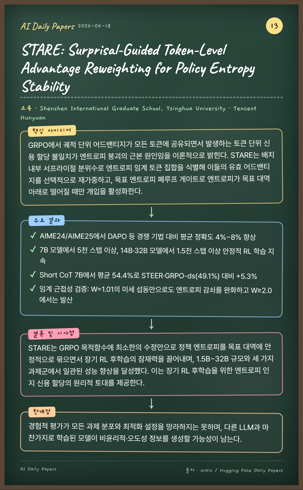
🏛 Shenzhen International Graduate School, Tsinghua University, Tencent Hunyuan
핵심 아이디어
GRPO에서 궤적 단위 어드밴티지가 모든 토큰에 공유되면서 발생하는 토큰 단위 신용 할당 불일치가 엔트로피 붕괴의 근본 원인임을 이론적으로 밝힌다. STARE는 배치 내부 서프라이절 분위수로 엔트로피 임계 토큰 집합을 식별해 이들의 유효 어드밴티지를 선택적으로 재가중하고, 목표 엔트로피 폐루프 게이트로 엔트로피가 목표 대역 아래로 떨어질 때만 개입을 활성화한다.
주요 결과
AIME24/AIME25에서 DAPO 등 경쟁 기법 대비 평균 정확도 4%~8% 향상
7B 모델에서 5천 스텝 이상, 14B·32B 모델에서 1.5천 스텝 이상 안정적 RL 학습 지속
Short CoT 7B에서 평균 54.4%로 STEER·GRPO-ds(49.1%) 대비 +5.3%
STARE는 GRPO 목적함수에 최소한의 수정만으로 정책 엔트로피를 목표 대역에 안정적으로 묶으면서 장기 RL 후학습의 잠재력을 끌어내며, 1.5B~32B 규모와 세 가지 과제군에서 일관된 성능 향상을 달성했다. 이는 장기 RL 후학습을 위한 엔트로피 인지 신용 할당의 원리적 토대를 제공한다.
한계점
경험적 평가가 모든 과제 분포와 최적화 설정을 망라하지는 못하며, 다른 LLM과 마찬가지로 학습된 모델이 비윤리적·오도성 정보를 생성할 가능성이 남는다.
MaineCoon: Pursuing A Real-Time Audio-Visual Social World Model
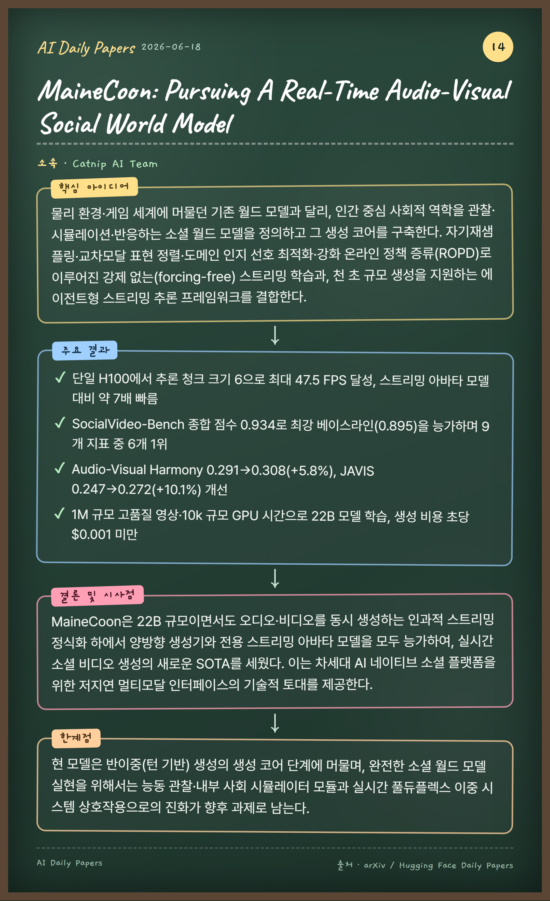
🏛 Catnip AI Team
핵심 아이디어
물리 환경·게임 세계에 머물던 기존 월드 모델과 달리, 인간 중심 사회적 역학을 관찰·시뮬레이션·반응하는 소셜 월드 모델을 정의하고 그 생성 코어를 구축한다. 자기재샘플링·교차모달 표현 정렬·도메인 인지 선호 최적화·강화 온라인 정책 증류(ROPD)로 이루어진 강제 없는(forcing-free) 스트리밍 학습과, 천 초 규모 생성을 지원하는 에이전트형 스트리밍 추론 프레임워크를 결합한다.
주요 결과
단일 H100에서 추론 청크 크기 6으로 최대 47.5 FPS 달성, 스트리밍 아바타 모델 대비 약 7배 빠름
SocialVideo-Bench 종합 점수 0.934로 최강 베이스라인(0.895)을 능가하며 9개 지표 중 6개 1위
Audio-Visual Harmony 0.291→0.308(+5.8%), JAVIS 0.247→0.272(+10.1%) 개선
1M 규모 고품질 영상·10k 규모 GPU 시간으로 22B 모델 학습, 생성 비용 초당 $0.001 미만
결론 및 시사점
MaineCoon은 22B 규모이면서도 오디오·비디오를 동시 생성하는 인과적 스트리밍 정식화 하에서 양방향 생성기와 전용 스트리밍 아바타 모델을 모두 능가하여, 실시간 소셜 비디오 생성의 새로운 SOTA를 세웠다. 이는 차세대 AI 네이티브 소셜 플랫폼을 위한 저지연 멀티모달 인터페이스의 기술적 토대를 제공한다.
한계점
현 모델은 반이중(턴 기반) 생성의 생성 코어 단계에 머물며, 완전한 소셜 월드 모델 실현을 위해서는 능동 관찰·내부 사회 시뮬레이터 모듈과 실시간 풀듀플렉스 이중 시스템 상호작용으로의 진화가 향후 과제로 남는다.
Beyond Alignment: Value Diversity as a Collective Property in Multicultural Agent Systems
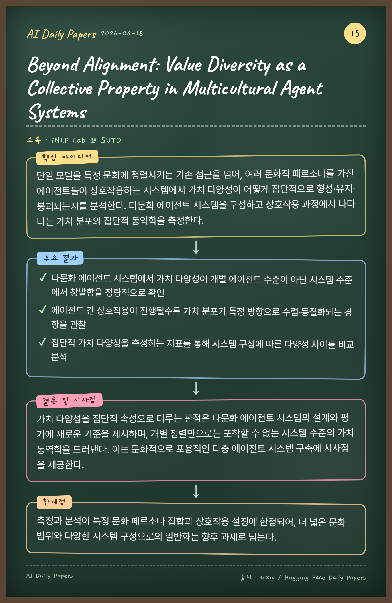
🏛 iNLP Lab @ SUTD
핵심 아이디어
단일 모델을 특정 문화에 정렬시키는 기존 접근을 넘어, 여러 문화적 페르소나를 가진 에이전트들이 상호작용하는 시스템에서 가치 다양성이 어떻게 집단적으로 형성·유지·붕괴되는지를 분석한다. 다문화 에이전트 시스템을 구성하고 상호작용 과정에서 나타나는 가치 분포의 집단적 동역학을 측정한다.
주요 결과
다문화 에이전트 시스템에서 가치 다양성이 개별 에이전트 수준이 아닌 시스템 수준에서 창발함을 정량적으로 확인
에이전트 간 상호작용이 진행될수록 가치 분포가 특정 방향으로 수렴·동질화되는 경향을 관찰
집단적 가치 다양성을 측정하는 지표를 통해 시스템 구성에 따른 다양성 차이를 비교 분석
결론 및 시사점
가치 다양성을 집단적 속성으로 다루는 관점은 다문화 에이전트 시스템의 설계와 평가에 새로운 기준을 제시하며, 개별 정렬만으로는 포착할 수 없는 시스템 수준의 가치 동역학을 드러낸다. 이는 문화적으로 포용적인 다중 에이전트 시스템 구축에 시사점을 제공한다.
한계점
측정과 분석이 특정 문화 페르소나 집합과 상호작용 설정에 한정되어, 더 넓은 문화 범위와 다양한 시스템 구성으로의 일반화는 향후 과제로 남는다.
단기 과제에 능숙해진 LLM 에이전트가 불확실성 속 장기 의사결정, 잡음 환경에서의 정보 획득, 변화 적응, 다중 요소 조율 능력을 갖췄는지 검증하기 위해 가상 구독형 소프트웨어 회사 NovaMind를 운영하게 한다. 에이전트는 34개 도구와 19개 테이블 비즈니스 데이터베이스를 갖춘 프로그래밍 가능한 파이썬 인터페이스로 가격, 마케팅, R&D, 인프라 등을 관리하며, 부분 관찰·잡음·지연·비정상성을 갖춘 시장에서 최종 보유 현금으로 평가받는다.
주요 결과
$1M 시작 자금으로 500일 시뮬레이션 시, 최신 모델 대부분이 파산하며 Claude Opus 4.8($27.8M)과 GPT-5.5($21.3M)만이 시작 잔고 위로 마감했다.
두 모델조차 3회 실험에서 일관된 수익을 내지 못했고, 규칙 기반 베이스라인($15.76M)을 초과한 모델은 이 둘뿐이었다.
달성 가능한 최종 현금 상한은 약 $2.2B로 추정되어 최고 성능 모델과 큰 격차를 보이며 벤치마크가 포화와 거리가 멂을 입증했다.
강한 모델은 고객 코호트를 코드로 시뮬레이션해 현금을 예측하고 협상 이력을 분석해 숨은 선호를 발굴하는 등 폭넓은 전략을 탐색했다.
결론 및 시사점
CEO-Bench는 장기 계획·정보 획득·적응·조율을 통합한 일관된 전략 행동을 측정하며, 현재 모델들이 개별 능력을 지속적이고 적응적인 진전으로 통합하는 데 상당한 여지가 남아 있음을 드러낸다. 기존 단기·일회성 평가가 포착하지 못하는 세밀한 행동 패턴을 노출하는 새로운 평가 방향을 제시한다.
한계점
현재 평가는 예비적 수준으로 모델당 3회 실험에 그치며, 최종 현금 상한 추정은 느슨한 근사치에 기반한다.
ViT-Up: Faithful Feature Upsampling for Vision Transformers
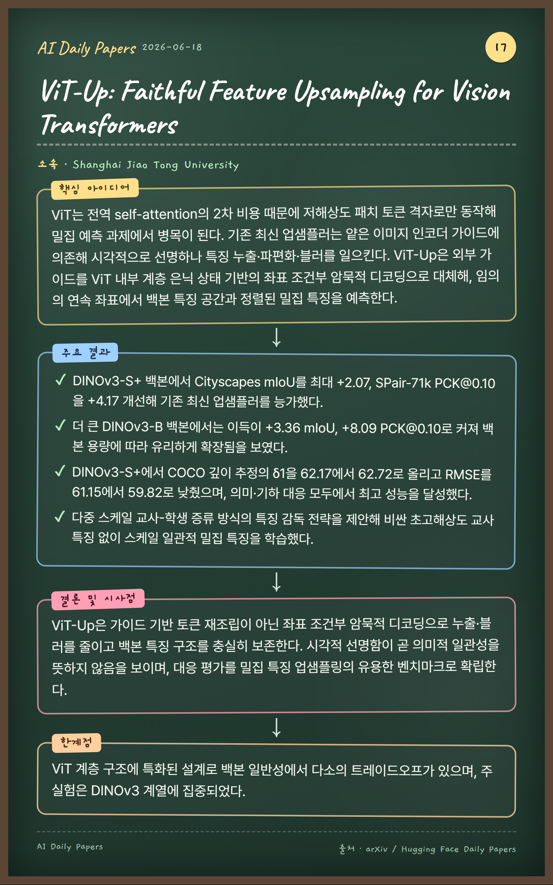
🏛 Shanghai Jiao Tong University
핵심 아이디어
ViT는 전역 self-attention의 2차 비용 때문에 저해상도 패치 토큰 격자로만 동작해 밀집 예측 과제에서 병목이 된다. 기존 최신 업샘플러는 얕은 이미지 인코더 가이드에 의존해 시각적으로 선명하나 특징 누출·파편화·블러를 일으킨다. ViT-Up은 외부 가이드를 ViT 내부 계층 은닉 상태 기반의 좌표 조건부 암묵적 디코딩으로 대체해, 임의의 연속 좌표에서 백본 특징 공간과 정렬된 밀집 특징을 예측한다.
주요 결과
DINOv3-S+ 백본에서 Cityscapes mIoU를 최대 +2.07, SPair-71k PCK@0.10을 +4.17 개선해 기존 최신 업샘플러를 능가했다.
더 큰 DINOv3-B 백본에서는 이득이 +3.36 mIoU, +8.09 PCK@0.10로 커져 백본 용량에 따라 유리하게 확장됨을 보였다.
DINOv3-S+에서 COCO 깊이 추정의 δ1을 62.17에서 62.72로 올리고 RMSE를 61.15에서 59.82로 낮췄으며, 의미·기하 대응 모두에서 최고 성능을 달성했다.
다중 스케일 교사-학생 증류 방식의 특징 감독 전략을 제안해 비싼 초고해상도 교사 특징 없이 스케일 일관적 밀집 특징을 학습했다.
결론 및 시사점
ViT-Up은 가이드 기반 토큰 재조립이 아닌 좌표 조건부 암묵적 디코딩으로 누출·블러를 줄이고 백본 특징 구조를 충실히 보존한다. 시각적 선명함이 곧 의미적 일관성을 뜻하지 않음을 보이며, 대응 평가를 밀집 특징 업샘플링의 유용한 벤치마크로 확립한다.
한계점
ViT 계층 구조에 특화된 설계로 백본 일반성에서 다소의 트레이드오프가 있으며, 주 실험은 DINOv3 계열에 집중되었다.
PAIWorld: A 3D-Consistent World Foundation Model for Robotic Manipulation
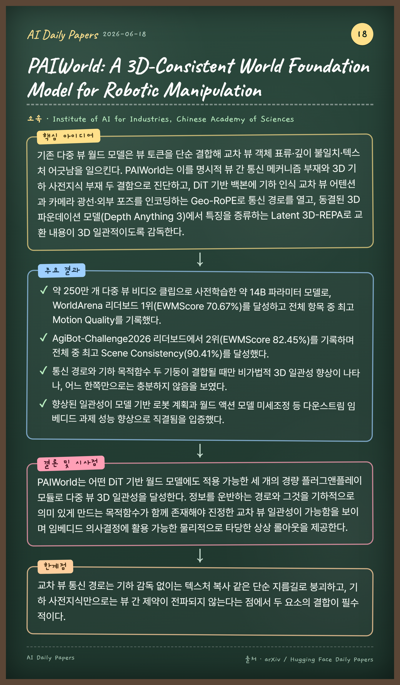
🏛 Institute of AI for Industries, Chinese Academy of Sciences
핵심 아이디어
기존 다중 뷰 월드 모델은 뷰 토큰을 단순 결합해 교차 뷰 객체 표류·깊이 불일치·텍스처 어긋남을 일으킨다. PAIWorld는 이를 명시적 뷰 간 통신 메커니즘 부재와 3D 기하 사전지식 부재 두 결함으로 진단하고, DiT 기반 백본에 기하 인식 교차 뷰 어텐션과 카메라 광선·외부 포즈를 인코딩하는 Geo-RoPE로 통신 경로를 열고, 동결된 3D 파운데이션 모델(Depth Anything 3)에서 특징을 증류하는 Latent 3D-REPA로 교환 내용이 3D 일관적이도록 감독한다.
주요 결과
약 250만 개 다중 뷰 비디오 클립으로 사전학습한 약 14B 파라미터 모델로, WorldArena 리더보드 1위(EWMScore 70.67%)를 달성하고 전체 항목 중 최고 Motion Quality를 기록했다.
AgiBot-Challenge2026 리더보드에서 2위(EWMScore 82.45%)를 기록하며 전체 중 최고 Scene Consistency(90.41%)를 달성했다.
통신 경로와 기하 목적함수 두 기둥이 결합될 때만 비가법적 3D 일관성 향상이 나타나, 어느 한쪽만으로는 충분하지 않음을 보였다.
향상된 일관성이 모델 기반 로봇 계획과 월드 액션 모델 미세조정 등 다운스트림 임베디드 과제 성능 향상으로 직결됨을 입증했다.
결론 및 시사점
PAIWorld는 어떤 DiT 기반 월드 모델에도 적용 가능한 세 개의 경량 플러그앤플레이 모듈로 다중 뷰 3D 일관성을 달성한다. 정보를 운반하는 경로와 그것을 기하적으로 의미 있게 만드는 목적함수가 함께 존재해야 진정한 교차 뷰 일관성이 가능함을 보이며 임베디드 의사결정에 활용 가능한 물리적으로 타당한 상상 롤아웃을 제공한다.
한계점
교차 뷰 통신 경로는 기하 감독 없이는 텍스처 복사 같은 단순 지름길로 붕괴하고, 기하 사전지식만으로는 뷰 간 제약이 전파되지 않는다는 점에서 두 요소의 결합이 필수적이다.
SciOrch: Learning to Orchestrate Expert LLMs for Solving Frontier Multimodal Scientific Reasoning Tasks
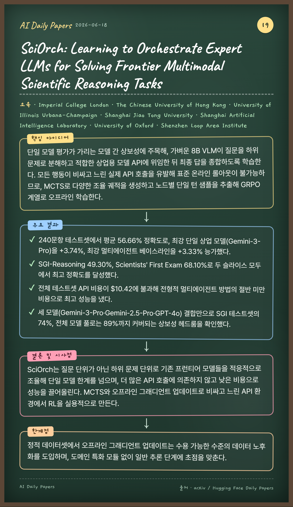
🏛 Imperial College London, The Chinese University of Hong Kong, University of Illinois Urbana-Champaign, Shanghai Jiao Tong University, Shanghai Artificial Intelligence Laboratory, University of Oxford, Shenzhen Loop Area Institute
핵심 아이디어
단일 모델 평가가 가리는 모델 간 상보성에 주목해, 가벼운 8B VLM이 질문을 하위 문제로 분해하고 적합한 상업용 모델 API에 위임한 뒤 최종 답을 종합하도록 학습한다. 모든 행동이 비싸고 느린 실제 API 호출을 유발해 표준 온라인 롤아웃이 불가능하므로, MCTS로 다양한 조율 궤적을 생성하고 노드별 단일 턴 샘플을 추출해 GRPO 계열로 오프라인 학습한다.
주요 결과
240문항 테스트셋에서 평균 56.66% 정확도로, 최강 단일 상업 모델(Gemini-3-Pro)을 +3.74%, 최강 멀티에이전트 베이스라인을 +3.33% 능가했다.
SGI-Reasoning 49.30%, Scientists' First Exam 68.10%로 두 슬라이스 모두에서 최고 정확도를 달성했다.
전체 테스트셋 API 비용이 $10.42에 불과해 전형적 멀티에이전트 방법의 절반 미만 비용으로 최고 성능을 냈다.
세 모델(Gemini-3-Pro·Gemini-2.5-Pro·GPT-4o) 결합만으로 SGI 테스트셋의 74%, 전체 모델 풀로는 89%까지 커버되는 상보성 헤드룸을 확인했다.
결론 및 시사점
SciOrch는 질문 단위가 아닌 하위 문제 단위로 기존 프런티어 모델들을 적응적으로 조율해 단일 모델 한계를 넘으며, 더 많은 API 호출에 의존하지 않고 낮은 비용으로 성능을 끌어올린다. MCTS와 오프라인 그래디언트 업데이트로 비싸고 느린 API 환경에서 RL을 실용적으로 만든다.
한계점
정적 데이터셋에서 오프라인 그래디언트 업데이트는 수용 가능한 수준의 데이터 노후화를 도입하며, 도메인 특화 모듈 없이 일반 추론 단계에 초점을 맞춘다.
RODS: Reward-Driven Online Data Synthesis for Multi-Turn Tool-Use Agents
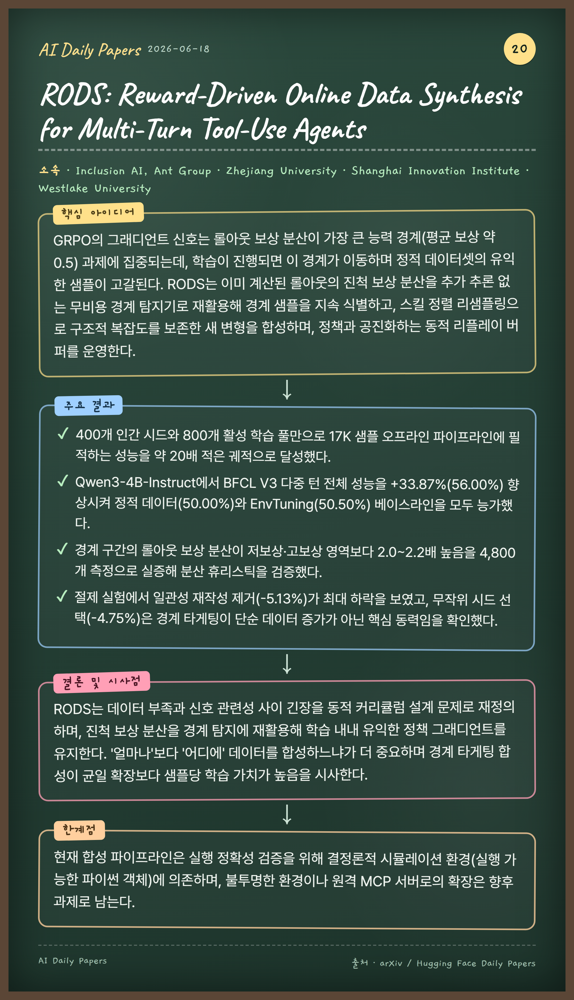
🏛 Inclusion AI, Ant Group, Zhejiang University, Shanghai Innovation Institute, Westlake University
핵심 아이디어
GRPO의 그래디언트 신호는 롤아웃 보상 분산이 가장 큰 능력 경계(평균 보상 약 0.5) 과제에 집중되는데, 학습이 진행되면 이 경계가 이동하며 정적 데이터셋의 유익한 샘플이 고갈된다. RODS는 이미 계산된 롤아웃의 진척 보상 분산을 추가 추론 없는 무비용 경계 탐지기로 재활용해 경계 샘플을 지속 식별하고, 스킬 정렬 리샘플링으로 구조적 복잡도를 보존한 새 변형을 합성하며, 정책과 공진화하는 동적 리플레이 버퍼를 운영한다.
주요 결과
400개 인간 시드와 800개 활성 학습 풀만으로 17K 샘플 오프라인 파이프라인에 필적하는 성능을 약 20배 적은 궤적으로 달성했다.
Qwen3-4B-Instruct에서 BFCL V3 다중 턴 전체 성능을 +33.87%(56.00%) 향상시켜 정적 데이터(50.00%)와 EnvTuning(50.50%) 베이스라인을 모두 능가했다.
경계 구간의 롤아웃 보상 분산이 저보상·고보상 영역보다 2.0~2.2배 높음을 4,800개 측정으로 실증해 분산 휴리스틱을 검증했다.
절제 실험에서 일관성 재작성 제거(-5.13%)가 최대 하락을 보였고, 무작위 시드 선택(-4.75%)은 경계 타게팅이 단순 데이터 증가가 아닌 핵심 동력임을 확인했다.
결론 및 시사점
RODS는 데이터 부족과 신호 관련성 사이 긴장을 동적 커리큘럼 설계 문제로 재정의하며, 진척 보상 분산을 경계 탐지에 재활용해 학습 내내 유익한 정책 그래디언트를 유지한다. '얼마나'보다 '어디에' 데이터를 합성하느냐가 더 중요하며 경계 타게팅 합성이 균일 확장보다 샘플당 학습 가치가 높음을 시사한다.
한계점
현재 합성 파이프라인은 실행 정확성 검증을 위해 결정론적 시뮬레이션 환경(실행 가능한 파이썬 객체)에 의존하며, 불투명한 환경이나 원격 MCP 서버로의 확장은 향후 과제로 남는다.
When Does Trajectory-Level Supervision Permit Efficient Offline Reinforcement Learning?
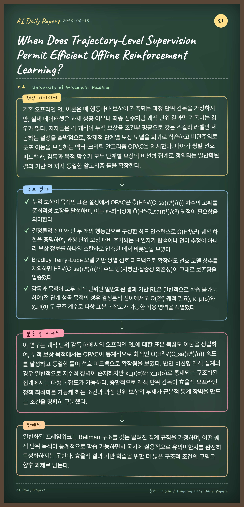
🏛 University of Wisconsin–Madison
핵심 아이디어
기존 오프라인 RL 이론은 매 행동마다 보상이 관측되는 과정 단위 감독을 가정하지만, 실제 데이터셋은 과제 성공 여부나 최종 점수처럼 궤적 단위 결과만 기록하는 경우가 많다. 저자들은 각 궤적이 누적 보상을 조건부 평균으로 갖는 스칼라 라벨만 제공하는 설정을 출발점으로, 잠재적 단계별 보상 모델을 회귀로 학습하고 비관주의로 분포 이동을 보정하는 액터-크리틱 알고리즘 OPAC을 제시한다. 나아가 쌍별 선호 피드백과, 감독과 목적 함수가 모두 단계별 보상의 비선형 집계로 정의되는 일반화된 결과 기반 RL까지 동일한 알고리즘 틀을 확장한다.
주요 결과
누적 보상이 목적인 표준 설정에서 OPAC은 Õ(H²·√(C_sa(π*)/n)) 차수의 고확률 준최적성 보장을 달성하며, 이는 ε-최적성에 Õ(H⁴·C_sa(π*)/ε²) 궤적이 필요함을 의미한다
결정론적 전이와 단 두 개의 행동만으로 구성한 하드 인스턴스로 Ω(H⁴/ε²) 궤적 하한을 증명하여, 과정 단위 보상 대비 추가되는 H 인자가 탐색이나 전이 추정이 아니라 보상 정보를 하나의 스칼라로 압축한 데서 비롯됨을 보였다
Bradley-Terry-Luce 모델 기반 쌍별 선호 피드백으로 확장해도 선호 모델 상수를 제외하면 H²·√(C_sa(π*)/n)의 주도 항(지평선·집중성 의존성)이 그대로 보존됨을 입증했다
감독과 목적이 모두 궤적 단위인 일반화된 결과 기반 RL은 일반적으로 학습 불가능하여(전 단계 성공 목적의 경우 결정론적 전이에서도 Ω(2ᴴ) 궤적 필요), κ_μ(σ)와 χ_μ(σ) 두 구조 계수로 다항 표본 복잡도가 가능한 가용 영역을 식별했다
결론 및 시사점
이 연구는 궤적 단위 감독 하에서의 오프라인 RL에 대한 표본 복잡도 이론을 정립하여, 누적 보상 목적에서는 OPAC이 통계적으로 최적인 Õ(H²·√(C_sa(π*)/n)) 속도를 달성하고 동일한 틀이 선호 피드백으로 확장됨을 보였다. 반면 비선형 궤적 집계의 경우 일반적으로 지수적 장벽이 존재하지만 κ_μ(σ)와 χ_μ(σ)로 통제되는 구조화된 집계에서는 다항 복잡도가 가능하다. 종합적으로 궤적 단위 감독이 효율적 오프라인 정책 최적화를 가능케 하는 조건과 과정 단위 보상의 부재가 근본적 통계 장벽을 만드는 조건을 명확히 구분했다.
한계점
일반화된 프레임워크는 Bellman 구조를 갖는 알려진 집계 규칙을 가정하며, 어떤 궤적 단위 목적이 통계적으로 학습 가능하면서 동시에 실용적으로 유의미한지를 완전히 특성화하지는 못한다. 효율적 결과 기반 학습을 위한 더 넓은 구조적 조건의 규명은 향후 과제로 남는다.
🏛 Massachusetts Institute of Technology, Stanford University, MIT-IBM Watson AI Lab
핵심 아이디어
에이전트 보조 시스템 훈련·개인화 평가·사회과학 연구 등에 활용될 사용자 시뮬레이터를 학습할 때, 기존 접근은 정답 응답과의 로그확률·유사도를 최대화해 하나의 정답을 모방한다. 그러나 같은 맥락에서 같은 사람도 여러 방식으로 말할 수 있으므로, 저자들은 튜링 테스트의 '구별 불가능성' 기준을 보상 신호로 삼는다. 사용자 이력·유도된 페르소나·현재 맥락을 입력받아 LLM 판별자가 생성 응답과 실제 사용자 응답 중 어느 쪽이 진짜 사람인지 1~7점으로 채점하고, 이 판별형 튜링 보상으로 GRPO를 통해 정책을 학습시킨다.
주요 결과
대화 채팅(PRISM)과 Reddit 포럼 토론(ConvoKit) 두 도메인 모두에서 Sonnet 4.6 튜링 판별 점수 기준으로 Turing-RL이 Sim-RL(유사도 보상)·Logprob-RL(로그확률 보상)·SFT 초기화 모델을 모두 능가했으며, 특히 Chat 도메인에서 격차가 컸다
300명 이상이 참여한 휴먼 튜링 테스트에서 Chat 도메인 승률 0.57로 최고치를 기록했고, 순열 검정 결과 SFT-Init(p=0.044)와 Sim-RL(p=0.022) 대비 유의하게 우수했으며 Reddit에서도 SFT-Init 대비 유의한 향상(p=0.0095)을 보였다
Turing-RL은 구별 불가능성을 최적화하면서도 정답 응답과의 내용 유사도를 희생하지 않아 Sim-RL과 대등한 유사도 점수를 유지했고, 맥락 특이성(specificity) 측면에서도 강한 성능을 보였다
GPT-5나 Qwen3.5-397B 같은 훨씬 큰 모델도 장황하고 보조자(assistant) 같은 응답을 내놓아 사용자 모방에서는 크게 개선되지 않았으며, 작은 Qwen3-8B를 튜링 보상으로 훈련한 모델이 더 사람다웠다
결론 및 시사점
정답 응답의 내용을 맞추는 것과 사람다운 구별 불가능성은 별개의 목표이며, 유사도 보상은 내용 일치는 높여도 사람과의 구별을 어렵게 만들지 못한다. 반면 판별형 튜링 보상은 내용 유사도를 떨어뜨리지 않으면서 구별 불가능성을 높여, 응답 모방보다 구별 불가능성 최적화가 사용자 시뮬레이터 학습에 더 효과적임을 보여준다.
한계점
특정 개인과 구별되지 않도록 훈련된 모델은 본질적으로 사칭·사기·사회공학 공격에 악용될 위험이 있어 워터마킹과 탐지기 등 안전장치가 필요하며, Reddit은 사람이 판별하기 어려워 휴먼 평가는 결정적 증거가 아닌 큰 경향의 검증으로만 보아야 한다.
🏛 Anates Labs, 뮌헨 공과대학교(TUM), 뉘른베르크 공과대학교, 튀빙겐 AI 센터(튀빙겐 대학교), Helmholtz AI, Google DeepMind
핵심 아이디어
Physics-IQ는 모델 생성 영상을 실제 물리 실험 영상과 직접 비교해 물리 이해도를 정량화하지만, 모호한 프롬프트, 데이터셋 단위 집계, 물리 현상과 무관한 아티팩트(spurious activation)라는 세 가지 교란 요인이 점수를 왜곡한다. 저자들은 (1) 프롬프트를 6개 구조화 필드와 모델별 템플릿으로 명확화하고, (2) 모든 샘플과 지표에 동일 가중치를 부여하는 샘플 단위 채점을 정의하며, (3) 참조 영상의 아티팩트를 정답에서 제거해 물리 효과 자체에 측정의 초점을 맞춘다.
주요 결과
전체 198개 벤치마크 영상 중 57.6%의 샘플을 정제하고, 34.8%의 프롬프트를 개선했으며 29.8%의 영상에 영향을 줌
프롬프트 문제는 핵심 정보 누락 27.3%, 사실 오류 4.5%, 시간적 부정확 4.5%, 모호한 표현 4.5%로 분류되고, 아티팩트는 비결정적 23.7%·결정적 6.1%로 구성됨
6개 이미지-투-비디오(I2V) 모델 비교에서 원본 대비 검증판의 순위가 의미 있게 변동(Kendall's τ=0.46)
결론 및 시사점
Physics-IQ Verified는 교란 요인을 줄여 영상 생성 모델의 물리 이해도를 더 신뢰성 있게 측정하며, 낮은 점수를 개별 샘플의 실패 모드까지 추적할 수 있는 세분화된 분석을 가능하게 한다. 모델별로 개선에 다르게 반응해 순위가 크게 바뀌는 점은 VGM 벤치마크가 관심 효과만을 정확히 측정하도록 신중하게 설계되어야 함을 보여준다.
한계점
검증판은 여전히 정답 영상의 녹화 품질과 사람이 수행한 프롬프트 교정·아티팩트 제거 과정에 의존하며, 평가는 66개 실험 기반의 198개 영상과 6개 I2V 모델이라는 제한된 범위에서 이루어졌다.
Externalizing Research Synthesis and Validation in AI Scientists through a Research Harness
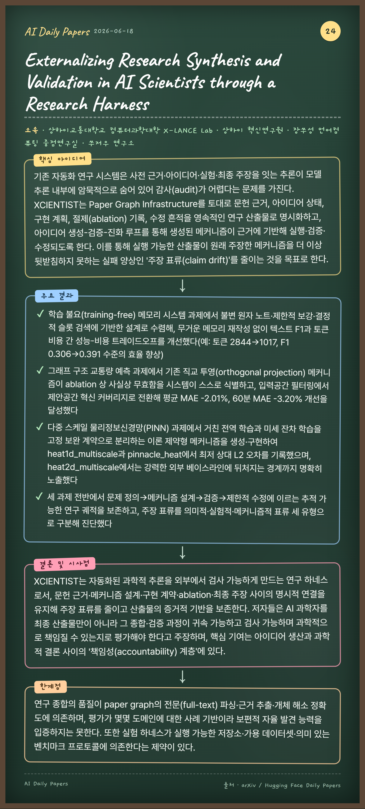
🏛 상하이교통대학교 컴퓨터과학대학 X-LANCE Lab, 상하이 혁신연구원, 장쑤성 언어컴퓨팅 중점연구실, 쑤저우 연구소
핵심 아이디어
기존 자동화 연구 시스템은 사전 근거·아이디어·실험·최종 주장을 잇는 추론이 모델 추론 내부에 암묵적으로 숨어 있어 감사(audit)가 어렵다는 문제를 가진다. XCIENTIST는 Paper Graph Infrastructure를 토대로 문헌 근거, 아이디어 상태, 구현 계획, 절제(ablation) 기록, 수정 흔적을 영속적인 연구 산출물로 명시화하고, 아이디어 생성-검증-진화 루프를 통해 생성된 메커니즘이 근거에 기반해 실행·검증·수정되도록 한다. 이를 통해 실행 가능한 산출물이 원래 주장한 메커니즘을 더 이상 뒷받침하지 못하는 실패 양상인 '주장 표류(claim drift)'를 줄이는 것을 목표로 한다.
주요 결과
학습 불요(training-free) 메모리 시스템 과제에서 불변 원자 노트·제한적 보강·결정적 슬롯 검색에 기반한 설계로 수렴해, 무거운 메모리 재작성 없이 텍스트 F1과 토큰 비용 간 성능-비용 트레이드오프를 개선했다(예: 토큰 2844→1017, F1 0.306→0.391 수준의 효율 향상)
그래프 구조 교통량 예측 과제에서 기존 직교 투영(orthogonal projection) 메커니즘이 ablation 상 사실상 무효함을 시스템이 스스로 식별하고, 입력공간 필터링에서 제안공간 혁신 커버리지로 전환해 평균 MAE -2.01%, 60분 MAE -3.20% 개선을 달성했다
다중 스케일 물리정보신경망(PINN) 과제에서 거친 전역 학습과 미세 잔차 학습을 고정 보완 계약으로 분리하는 이론 제약형 메커니즘을 생성·구현하여 heat1d_multiscale과 pinnacle_heat에서 최저 상대 L2 오차를 기록했으며, heat2d_multiscale에서는 강력한 외부 베이스라인에 뒤처지는 경계까지 명확히 노출했다
세 과제 전반에서 문제 정의→메커니즘 설계→검증→제한적 수정에 이르는 추적 가능한 연구 궤적을 보존하고, 주장 표류를 의미적·실험적·메커니즘적 표류 세 유형으로 구분해 진단했다
결론 및 시사점
XCIENTIST는 자동화된 과학적 추론을 외부에서 검사 가능하게 만드는 연구 하네스로서, 문헌 근거·메커니즘 설계·구현 계약·ablation·최종 주장 사이의 명시적 연결을 유지해 주장 표류를 줄이고 산출물의 증거적 기반을 보존한다. 저자들은 AI 과학자를 최종 산출물만이 아니라 그 종합·검증 과정이 귀속 가능하고 검사 가능하며 과학적으로 책임질 수 있는지로 평가해야 한다고 주장하며, 핵심 기여는 아이디어 생산과 과학적 결론 사이의 '책임성(accountability) 계층'에 있다.
한계점
연구 종합의 품질이 paper graph의 전문(full-text) 파싱·근거 추출·개체 해소 정확도에 의존하며, 평가가 몇몇 도메인에 대한 사례 기반이라 보편적 자율 발견 능력을 입증하지는 못한다. 또한 실험 하네스가 실행 가능한 저장소·가용 데이터셋·의미 있는 벤치마크 프로토콜에 의존한다는 제약이 있다.
MyPCBench: A Benchmark for Personally Intelligent Computer-Use Agents
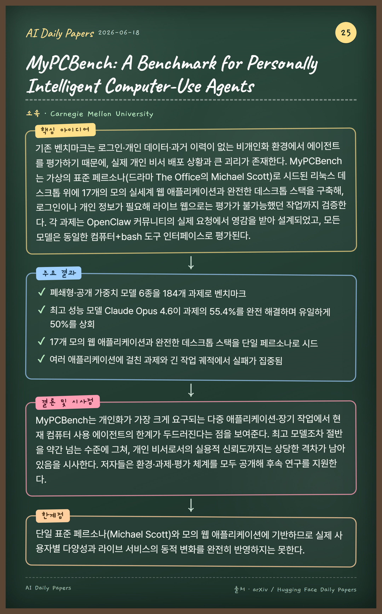
🏛 Carnegie Mellon University
핵심 아이디어
기존 벤치마크는 로그인·개인 데이터·과거 이력이 없는 비개인화 환경에서 에이전트를 평가하기 때문에, 실제 개인 비서 배포 상황과 큰 괴리가 존재한다. MyPCBench는 가상의 표준 페르소나(드라마 The Office의 Michael Scott)로 시드된 리눅스 데스크톱 위에 17개의 모의 실세계 웹 애플리케이션과 완전한 데스크톱 스택을 구축해, 로그인이나 개인 정보가 필요해 라이브 웹으로는 평가가 불가능했던 작업까지 검증한다. 각 과제는 OpenClaw 커뮤니티의 실제 요청에서 영감을 받아 설계되었고, 모든 모델은 동일한 컴퓨터+bash 도구 인터페이스로 평가된다.
주요 결과
폐쇄형·공개 가중치 모델 6종을 184개 과제로 벤치마크
최고 성능 모델 Claude Opus 4.6이 과제의 55.4%를 완전 해결하며 유일하게 50%를 상회
17개 모의 웹 애플리케이션과 완전한 데스크톱 스택을 단일 페르소나로 시드
여러 애플리케이션에 걸친 과제와 긴 작업 궤적에서 실패가 집중됨
결론 및 시사점
MyPCBench는 개인화가 가장 크게 요구되는 다중 애플리케이션·장기 작업에서 현재 컴퓨터 사용 에이전트의 한계가 두드러진다는 점을 보여준다. 최고 모델조차 절반을 약간 넘는 수준에 그쳐, 개인 비서로서의 실용적 신뢰도까지는 상당한 격차가 남아 있음을 시사한다. 저자들은 환경·과제·평가 체계를 모두 공개해 후속 연구를 지원한다.
한계점
단일 표준 페르소나(Michael Scott)와 모의 웹 애플리케이션에 기반하므로 실제 사용자별 다양성과 라이브 서비스의 동적 변화를 완전히 반영하지는 못한다.
IndustryBench-MIPU: Benchmarking Multi-Image Attribute Value Extraction for Industrial Products
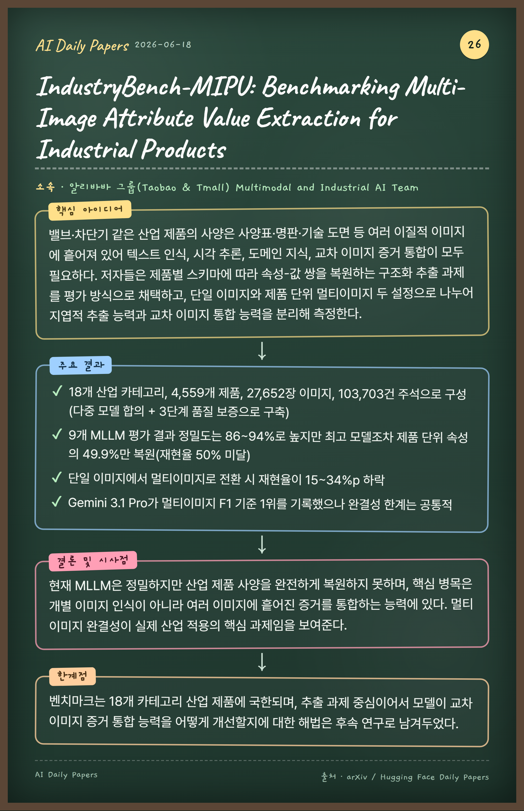
🏛 알리바바 그룹(Taobao & Tmall) Multimodal and Industrial AI Team
핵심 아이디어
밸브·차단기 같은 산업 제품의 사양은 사양표·명판·기술 도면 등 여러 이질적 이미지에 흩어져 있어 텍스트 인식, 시각 추론, 도메인 지식, 교차 이미지 증거 통합이 모두 필요하다. 저자들은 제품별 스키마에 따라 속성-값 쌍을 복원하는 구조화 추출 과제를 평가 방식으로 채택하고, 단일 이미지와 제품 단위 멀티이미지 두 설정으로 나누어 지엽적 추출 능력과 교차 이미지 통합 능력을 분리해 측정한다.
주요 결과
18개 산업 카테고리, 4,559개 제품, 27,652장 이미지, 103,703건 주석으로 구성(다중 모델 합의 + 3단계 품질 보증으로 구축)
9개 MLLM 평가 결과 정밀도는 86~94%로 높지만 최고 모델조차 제품 단위 속성의 49.9%만 복원(재현율 50% 미달)
단일 이미지에서 멀티이미지로 전환 시 재현율이 15~34%p 하락
Gemini 3.1 Pro가 멀티이미지 F1 기준 1위를 기록했으나 완결성 한계는 공통적
결론 및 시사점
현재 MLLM은 정밀하지만 산업 제품 사양을 완전하게 복원하지 못하며, 핵심 병목은 개별 이미지 인식이 아니라 여러 이미지에 흩어진 증거를 통합하는 능력에 있다. 멀티이미지 완결성이 실제 산업 적용의 핵심 과제임을 보여준다.
한계점
벤치마크는 18개 카테고리 산업 제품에 국한되며, 추출 과제 중심이어서 모델이 교차 이미지 증거 통합 능력을 어떻게 개선할지에 대한 해법은 후속 연구로 남겨두었다.
iOSWorld: A Benchmark for Personally Intelligent Phone Agents
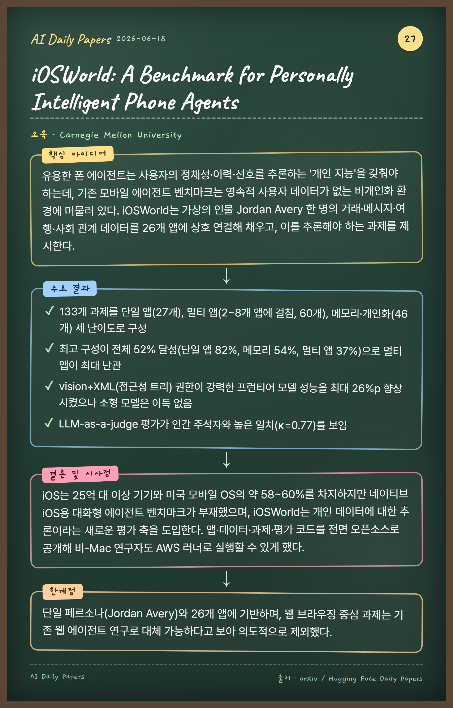
🏛 Carnegie Mellon University
핵심 아이디어
유용한 폰 에이전트는 사용자의 정체성·이력·선호를 추론하는 '개인 지능'을 갖춰야 하는데, 기존 모바일 에이전트 벤치마크는 영속적 사용자 데이터가 없는 비개인화 환경에 머물러 있다. iOSWorld는 가상의 인물 Jordan Avery 한 명의 거래·메시지·여행·사회 관계 데이터를 26개 앱에 상호 연결해 채우고, 이를 추론해야 하는 과제를 제시한다.
주요 결과
133개 과제를 단일 앱(27개), 멀티 앱(2~8개 앱에 걸침, 60개), 메모리·개인화(46개) 세 난이도로 구성
최고 구성이 전체 52% 달성(단일 앱 82%, 메모리 54%, 멀티 앱 37%)으로 멀티 앱이 최대 난관
vision+XML(접근성 트리) 권한이 강력한 프런티어 모델 성능을 최대 26%p 향상시켰으나 소형 모델은 이득 없음
LLM-as-a-judge 평가가 인간 주석자와 높은 일치(κ=0.77)를 보임
결론 및 시사점
iOS는 25억 대 이상 기기와 미국 모바일 OS의 약 58~60%를 차지하지만 네이티브 iOS용 대화형 에이전트 벤치마크가 부재했으며, iOSWorld는 개인 데이터에 대한 추론이라는 새로운 평가 축을 도입한다. 앱·데이터·과제·평가 코드를 전면 오픈소스로 공개해 비-Mac 연구자도 AWS 러너로 실행할 수 있게 했다.
한계점
단일 페르소나(Jordan Avery)와 26개 앱에 기반하며, 웹 브라우징 중심 과제는 기존 웹 에이전트 연구로 대체 가능하다고 보아 의도적으로 제외했다.
Bag of Dims: Training-Free Mechanistic Interpretability via Dimension-Level Sign Patterns
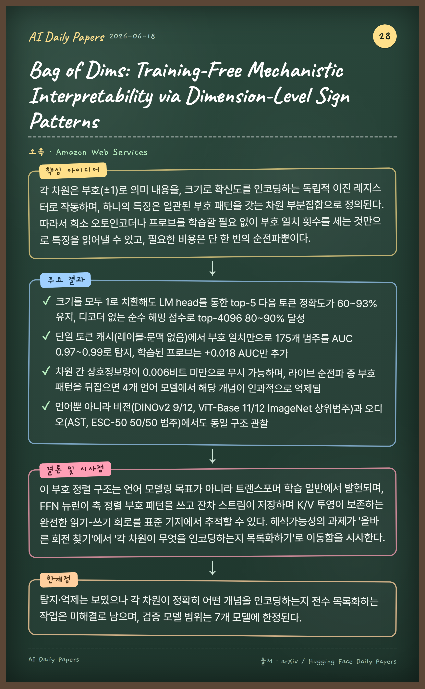
🏛 Amazon Web Services
핵심 아이디어
각 차원은 부호(±1)로 의미 내용을, 크기로 확신도를 인코딩하는 독립적 이진 레지스터로 작동하며, 하나의 특징은 일관된 부호 패턴을 갖는 차원 부분집합으로 정의된다. 따라서 희소 오토인코더나 프로브를 학습할 필요 없이 부호 일치 횟수를 세는 것만으로 특징을 읽어낼 수 있고, 필요한 비용은 단 한 번의 순전파뿐이다.
주요 결과
크기를 모두 1로 치환해도 LM head를 통한 top-5 다음 토큰 정확도가 60~93% 유지, 디코더 없는 순수 해밍 점수로 top-4096 80~90% 달성
단일 토큰 캐시(레이블·문맥 없음)에서 부호 일치만으로 175개 범주를 AUC 0.97~0.99로 탐지, 학습된 프로브는 +0.018 AUC만 추가
차원 간 상호정보량이 0.006비트 미만으로 무시 가능하며, 라이브 순전파 중 부호 패턴을 뒤집으면 4개 언어 모델에서 해당 개념이 인과적으로 억제됨
언어뿐 아니라 비전(DINOv2 9/12, ViT-Base 11/12 ImageNet 상위범주)과 오디오(AST, ESC-50 50/50 범주)에서도 동일 구조 관찰
결론 및 시사점
이 부호 정렬 구조는 언어 모델링 목표가 아니라 트랜스포머 학습 일반에서 발현되며, FFN 뉴런이 축 정렬 부호 패턴을 쓰고 잔차 스트림이 저장하며 K/V 투영이 보존하는 완전한 읽기-쓰기 회로를 표준 기저에서 추적할 수 있다. 해석가능성의 과제가 '올바른 회전 찾기'에서 '각 차원이 무엇을 인코딩하는지 목록화하기'로 이동함을 시사한다.
한계점
탐지·억제는 보였으나 각 차원이 정확히 어떤 개념을 인코딩하는지 전수 목록화하는 작업은 미해결로 남으며, 검증 모델 범위는 7개 모델에 한정된다.
Seeing Before Reasoning: Decoupling Perception and Reasoning for Shortcut-Resilient Multimodal On-Policy Self-Distillation
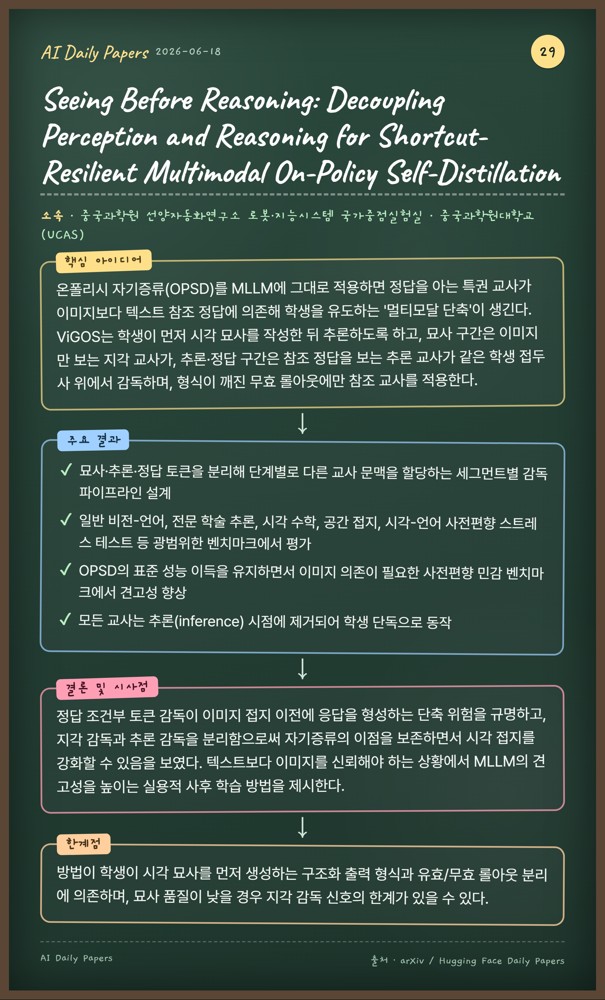
🏛 중국과학원 선양자동화연구소 로봇·지능시스템 국가중점실험실, 중국과학원대학교(UCAS)
핵심 아이디어
온폴리시 자기증류(OPSD)를 MLLM에 그대로 적용하면 정답을 아는 특권 교사가 이미지보다 텍스트 참조 정답에 의존해 학생을 유도하는 '멀티모달 단축'이 생긴다. ViGOS는 학생이 먼저 시각 묘사를 작성한 뒤 추론하도록 하고, 묘사 구간은 이미지만 보는 지각 교사가, 추론·정답 구간은 참조 정답을 보는 추론 교사가 같은 학생 접두사 위에서 감독하며, 형식이 깨진 무효 롤아웃에만 참조 교사를 적용한다.
주요 결과
묘사·추론·정답 토큰을 분리해 단계별로 다른 교사 문맥을 할당하는 세그먼트별 감독 파이프라인 설계
일반 비전-언어, 전문 학술 추론, 시각 수학, 공간 접지, 시각-언어 사전편향 스트레스 테스트 등 광범위한 벤치마크에서 평가
OPSD의 표준 성능 이득을 유지하면서 이미지 의존이 필요한 사전편향 민감 벤치마크에서 견고성 향상
모든 교사는 추론(inference) 시점에 제거되어 학생 단독으로 동작
결론 및 시사점
정답 조건부 토큰 감독이 이미지 접지 이전에 응답을 형성하는 단축 위험을 규명하고, 지각 감독과 추론 감독을 분리함으로써 자기증류의 이점을 보존하면서 시각 접지를 강화할 수 있음을 보였다. 텍스트보다 이미지를 신뢰해야 하는 상황에서 MLLM의 견고성을 높이는 실용적 사후 학습 방법을 제시한다.
한계점
방법이 학생이 시각 묘사를 먼저 생성하는 구조화 출력 형식과 유효/무효 롤아웃 분리에 의존하며, 묘사 품질이 낮을 경우 지각 감독 신호의 한계가 있을 수 있다.
Morpheus: A Morphology-Aware Neural Tokenizer and Word Embedder for Turkish
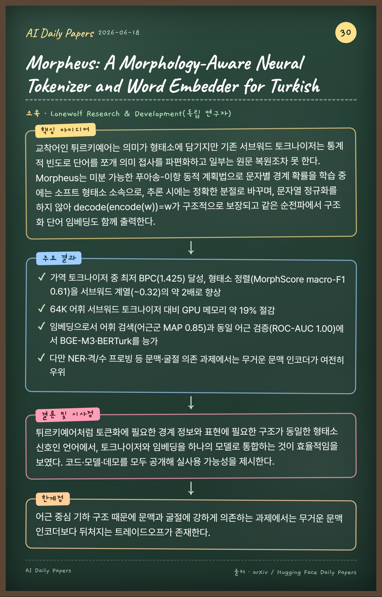
🏛 Lonewolf Research & Development(독립 연구자)
핵심 아이디어
교착어인 튀르키예어는 의미가 형태소에 담기지만 기존 서브워드 토크나이저는 통계적 빈도로 단어를 쪼개 의미 접사를 파편화하고 일부는 원문 복원조차 못 한다. Morpheus는 미분 가능한 푸아송-이항 동적 계획법으로 문자별 경계 확률을 학습 중에는 소프트 형태소 소속으로, 추론 시에는 정확한 분절로 바꾸며, 문자열 정규화를 하지 않아 decode(encode(w))=w가 구조적으로 보장되고 같은 순전파에서 구조화 단어 임베딩도 함께 출력한다.
주요 결과
가역 토크나이저 중 최저 BPC(1.425) 달성, 형태소 정렬(MorphScore macro-F1 0.61)을 서브워드 계열(~0.32)의 약 2배로 향상
HiLo-Token: Input-Adaptive High-Low Frequency Token Compression for Efficient Image Editing
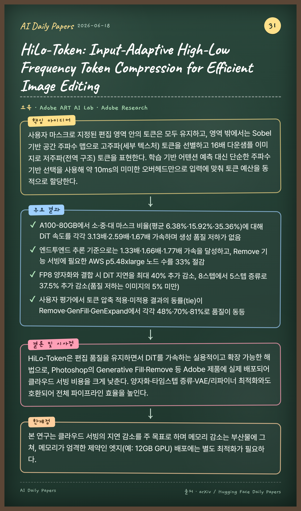
🏛 Adobe ART AI Lab, Adobe Research
핵심 아이디어
사용자 마스크로 지정된 편집 영역 안의 토큰은 모두 유지하고, 영역 밖에서는 Sobel 기반 공간 주파수 맵으로 고주파(세부 텍스처) 토큰을 선별하고 16배 다운샘플 이미지로 저주파(전역 구조) 토큰을 표현한다. 학습 기반 어텐션 예측 대신 단순한 주파수 기반 선택을 사용해 약 10ms의 미미한 오버헤드만으로 입력에 맞춰 토큰 예산을 동적으로 할당한다.
주요 결과
A100-80GB에서 소·중·대 마스크 비율(평균 6.38%·15.92%·35.36%)에 대해 DiT 속도를 각각 3.13배·2.59배·1.67배 가속하며 생성 품질 저하가 없음
엔드투엔드 추론 기준으로는 1.33배·1.66배·1.77배 가속을 달성하고, Remove 기능 서빙에 필요한 AWS p5.48xlarge 노드 수를 33% 절감
FP8 양자화와 결합 시 DiT 지연을 최대 40% 추가 감소, 8스텝에서 5스텝 증류로 37.5% 추가 감소(품질 저하는 이미지의 5% 미만)
사용자 평가에서 토큰 압축 적용·미적용 결과의 동률(tie)이 Remove·GenFill·GenExpand에서 각각 48%·70%·81%로 품질이 동등
결론 및 시사점
HiLo-Token은 편집 품질을 유지하면서 DiT를 가속하는 실용적이고 확장 가능한 해법으로, Photoshop의 Generative Fill·Remove 등 Adobe 제품에 실제 배포되어 클라우드 서빙 비용을 크게 낮춘다. 양자화·타임스텝 증류·VAE/리파이너 최적화와도 호환되어 전체 파이프라인 효율을 높인다.
한계점
본 연구는 클라우드 서빙의 지연 감소를 주 목표로 하며 메모리 감소는 부산물에 그쳐, 메모리가 엄격한 제약인 엣지(예: 12GB GPU) 배포에는 별도 최적화가 필요하다.
Reinforcement Learning-Guided Retrieval with Soft Fusion for Robust Multimodal Imitation Learning under Missing Modalities
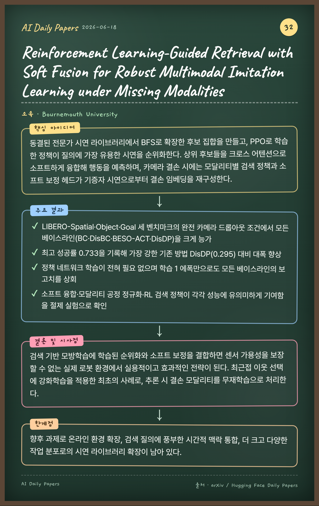
🏛 Bournemouth University
핵심 아이디어
동결된 전문가 시연 라이브러리에서 BFS로 확장한 후보 집합을 만들고, PPO로 학습한 정책이 질의에 가장 유용한 시연을 순위화한다. 상위 후보들을 크로스 어텐션으로 소프트하게 융합해 행동을 예측하며, 카메라 결손 시에는 모달리티별 검색 정책과 소프트 보정 헤드가 기증자 시연으로부터 결손 임베딩을 재구성한다.
주요 결과
LIBERO-Spatial·Object·Goal 세 벤치마크의 완전 카메라 드롭아웃 조건에서 모든 베이스라인(BC·DisBC·BESO-ACT·DisDP)을 크게 능가
최고 성공률 0.733을 기록해 가장 강한 기존 방법 DisDP(0.295) 대비 대폭 향상
정책 네트워크 학습이 전혀 필요 없으며 학습 1 에폭만으로도 모든 베이스라인의 보고치를 상회
소프트 융합·모달리티 공정 정규화·RL 검색 정책이 각각 성능에 유의미하게 기여함을 절제 실험으로 확인
결론 및 시사점
검색 기반 모방학습에 학습된 순위화와 소프트 보정을 결합하면 센서 가용성을 보장할 수 없는 실제 로봇 환경에서 실용적이고 효과적인 전략이 된다. 최근접 이웃 선택에 강화학습을 적용한 최초의 사례로, 추론 시 결손 모달리티를 무재학습으로 처리한다.
한계점
향후 과제로 온라인 환경 확장, 검색 질의에 풍부한 시간적 맥락 통합, 더 크고 다양한 작업 분포로의 시연 라이브러리 확장이 남아 있다.
A Benchmark and Framework for Evaluating Next Action Predictions in Spreadsheets
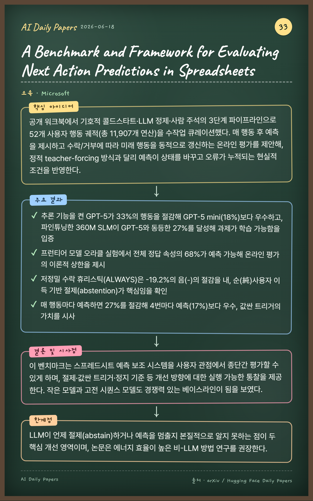
🏛 Microsoft
핵심 아이디어
공개 워크북에서 기호적 콜드스타트·LLM 정제·사람 주석의 3단계 파이프라인으로 52개 사용자 행동 궤적(총 11,907개 연산)을 수작업 큐레이션했다. 매 행동 후 예측을 제시하고 수락/거부에 따라 미래 행동을 동적으로 갱신하는 온라인 평가를 제안해, 정적 teacher-forcing 방식과 달리 예측이 상태를 바꾸고 오류가 누적되는 현실적 조건을 반영한다.
주요 결과
추론 기능을 켠 GPT-5가 33%의 행동을 절감해 GPT-5 mini(18%)보다 우수하고, 파인튜닝한 360M SLM이 GPT-5와 동등한 27%를 달성해 과제가 학습 가능함을 입증
프런티어 모델 오라클 실험에서 전체 정답 속성의 68%가 예측 가능해 온라인 평가의 이론적 상한을 제시
저정밀 수락 휴리스틱(ALWAYS)은 -19.2%의 음(-)의 절감을 내, 순(純)사용자 이득 기반 절제(abstention)가 핵심임을 확인
매 행동마다 예측하면 27%를 절감해 4번마다 예측(17%)보다 우수, 값싼 트리거의 가치를 시사
결론 및 시사점
이 벤치마크는 스프레드시트 예측 보조 시스템을 사용자 관점에서 종단간 평가할 수 있게 하며, 절제·값싼 트리거·정지 기준 등 개선 방향에 대한 실행 가능한 통찰을 제공한다. 작은 모델과 고전 시퀀스 모델도 경쟁력 있는 베이스라인이 됨을 보였다.
한계점
LLM이 언제 절제(abstain)하거나 예측을 멈출지 본질적으로 알지 못하는 점이 두 핵심 개선 영역이며, 논문은 에너지 효율이 높은 비-LLM 방법 연구를 권장한다.
LLM-Enabled NWDAF: A Step Toward AI-Native 6G Network Intelligence
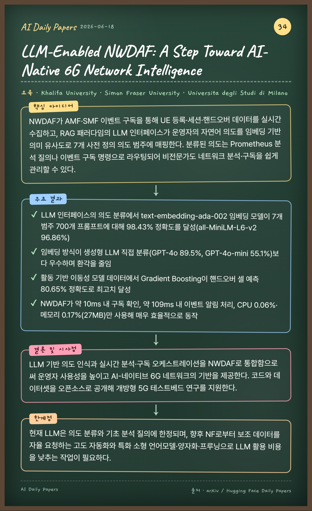
🏛 Khalifa University, Simon Fraser University, Universita degli Studi di Milano
핵심 아이디어
NWDAF가 AMF·SMF 이벤트 구독을 통해 UE 등록·세션·핸드오버 데이터를 실시간 수집하고, RAG 패러다임의 LLM 인터페이스가 운영자의 자연어 의도를 임베딩 기반 의미 유사도로 7개 사전 정의 의도 범주에 매핑한다. 분류된 의도는 Prometheus 분석 질의나 이벤트 구독 명령으로 라우팅되어 비전문가도 네트워크 분석·구독을 쉽게 관리할 수 있다.
주요 결과
LLM 인터페이스의 의도 분류에서 text-embedding-ada-002 임베딩 모델이 7개 범주 700개 프롬프트에 대해 98.43% 정확도를 달성(all-MiniLM-L6-v2 96.86%)
임베딩 방식이 생성형 LLM 직접 분류(GPT-4o 89.5%, GPT-4o-mini 55.1%)보다 우수하며 환각을 줄임
활동 기반 이동성 모델 데이터에서 Gradient Boosting이 핸드오버 셀 예측 80.65% 정확도로 최고치 달성
NWDAF가 약 10ms 내 구독 확인, 약 109ms 내 이벤트 알림 처리, CPU 0.06%·메모리 0.17%(27MB)만 사용해 매우 효율적으로 동작
결론 및 시사점
LLM 기반 의도 인식과 실시간 분석·구독 오케스트레이션을 NWDAF로 통합함으로써 운영자 사용성을 높이고 AI-네이티브 6G 네트워크의 기반을 제공한다. 코드와 데이터셋을 오픈소스로 공개해 개방형 5G 테스트베드 연구를 지원한다.
한계점
현재 LLM은 의도 분류와 기초 분석 질의에 한정되며, 향후 NF로부터 보조 데이터를 자율 요청하는 고도 자동화와 특화 소형 언어모델·양자화·프루닝으로 LLM 활용 비용을 낮추는 작업이 필요하다.
🏛 University of Illinois Urbana-Champaign, Carnegie Mellon University
핵심 아이디어
개인화를 사용자 속성 추출·속성 관련성 매칭·개인화 응답 생성의 3단계로 구성하고, 50명 실사용자의 550개 대화와 3단계 전반의 인간 판단(속성 5,949건·속성-프롬프트 매칭 11,919건·응답 선호 1,101건)을 수집해 모델 성능과 인간 정렬도를 비교한다. 각 단계에서 인간 데이터를 도입하면 합성 평가가 가리던 한계가 드러남을 보인다.
주요 결과
실제 대화에서 추출한 속성은 합성 대비 22%p 더 많이 문제로 판정되었고, 인간 주석 학습 RoBERTa 검증기가 F1 0.726으로 최고 성능을 기록(검증-정제 단계로 수락률 58%→90% 이상 상승)
관련성 매칭에서 LLM은 인간보다 20~40%p 더 많은 속성을 관련으로 과선택했으며, GRPO 학습 Qwen3-4B가 F1·정밀도를 0.417/0.267에서 0.641/0.611로 개선
개인화 응답의 54.6%가 인간 판단상 일반 응답보다 낫지 않았고 일부 오픈소스 모델은 오히려 품질이 저하됨
학습된 보상 모델은 인간 평점과 약 0.3의 Spearman 상관에 그쳐, 인간 정렬 개인화 품질 판단의 직접 모델링이 어려움을 시사
결론 및 시사점
개인화는 자동·합성 평가에 고유한 어려움을 제기하며, 인간을 파이프라인 중심으로 재배치해야 진전이 가능하다. 공개한 데이터는 모델이 사용자 정보를 인간이 유용하다고 느끼는 방식으로 추출·선택·통합하는 연구의 기반을 제공한다.
한계점
인간 주석을 합의 레이블로 집계해 개인 간 변이를 소실시켰고, 데이터가 영어·서구 규범에 치우쳐 있으며, 메모리 갱신이나 상충 속성 처리 등 실배포 개인화의 일부 측면은 다루지 못했다.